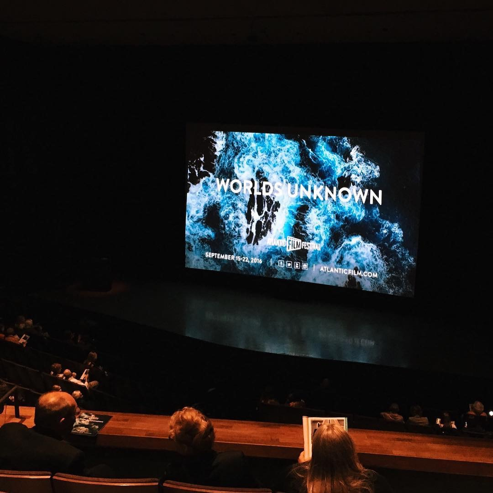

Looking forward to watching â€ROSE PLAYS JULIE directed by Joe Lawlor and Christine Molloy through Carbon Arc’s online screening. Lawlor and Molloy always make thought provoking films that stay with me. 🎥
Watching â€a film from Guatemala on my March Around the World with the 2015 film IXCANUL directed by Jayro Bustamante. 🎥🇬🇹
Today I’m watching â€the 2008 film TREELESS MOUNTAIN directed by So Yong Kim from South Korea on my March Around the World. 🎥🇰🇷
Watching a film from Romanian director Cristi Puiu from 2020 – MALMKROG on my March Around the World today. 🎥🇷🇴

Watching â€the Bolivian documentary film WOMEN OF THE MINE from 2014 directed by Malena Bystrowicz and Loreley Unamuno as part of March Around the World. 🥠🇧🇴
Continuing my March Around the World and celebrating Isabelle Huppert’s birthday with the 1991 German film â€MALINA directed by Werner Schroeter on MUBI. 🥠🇩🇪
Khachapuri (Georgian Cheese Bread) from a King Arthur Baking recipe. ğŸ
The next stop in my March Around the World is in Greece as I watch the 2018 film â€PITY directed by Babis Makridis on MUBI. 🥠🇬🇷

Today my March Around the World film is from Vietnam with the 2019 film THE TREE HOUSE directed by Truong Minh Quy on MUBI. 🥠🇻🇳

My next March Around the World film is from France, directed by Nelly Kaplan in 1969 – A VERY CURIOUS GIRL on The Criterion Channel. 🎥🇫🇷
Continuing to March Around the World by stopping in Ireland to watch the 2020 film â€TO THE MOON directed by Tadhg O’Sullivan as part of Montréal’s Festival du nouveau cinéma’s Nuit Blanche celebration. 🎥🇮🇪🌕
Zojirushi Bread Machine
One of the most useful things I have is my Zojirushi Virtuoso Plus Breadmaker. I’ve had it for more than a year now and I use it a few times a week. I still make sourdough bread and I knead the dough in the bread machine which saves a lot of time.
When I’m pressed for time I can make a loaf of bread in the machine in a few hours without having to do much after everything gets put into the machine. It’s also great for making pasta dough or any other stuff that needs to be kneaded. Using the recipes from King Arthur Baking has made a big difference and I even occasionally make some tomato soup using the “Jam” setting on the bread machine.
It’s large enough to make a full-sized 2 pound loaf of bread. Following the guidance of King Arthur Baking, when I make bread in the machine I take the dough out just before the final rise and remove the paddles, and form the loaf before putting it back into the machine. This reduces the dents in the bread the paddles will cause, and it also makes the bread slip more easily out of the bucket when the bread finishes baking.
Lately, my favourite bread machine bread is the Back-of-the-Bag Oatmeal Bread and my other regular recipe is the Bread Machine Bread - Easy As Can Be recipe. One of the benefits of working from home during the pandemic is that there now is always fresh, homemade bread in the house. It’s great to be able to get up in the morning and put the ingredients into the machine and then have a fresh loaf of bread ready at lunchtime.
Watching â€DEATH OF A LADIES’ MAN directed by Matt Bissonnette because of Leonard Cohen music, Gabriel Byrne, and a bunch of Québécois actors. 🎥
Sipping a delicious Double Orange Ale from Unfiltered and thinking that my last day at the school before everything changed was exactly a year ago.

Watching â€the sublime and beautiful THE GRAND BUDAPEST HOTEL yet again. 🎥
Watching â€a film from Japan in my March Around The World with Naomi Kawase’s 2020 film TRUE MOTHERS. 🥠🇯🇵
Watching â€a 1953 film from Spain for my next stop in my March Around World – SEGUNDO LÓPEZ, URBAN ADVENTURER directed by Ana Mariscal thanks to the Instituto Cervantes. 🥠🇪🇸
Film #12 in my March Around the World is from Poland – the 2019 film â€CORPUS CHRISTI directed by Jan Komasa on the Criterion Channel. 🥠🇵🇱
Watching â€film #11 in my March Around the World with a 2020 film from Georgia – BEGINNING directed by Dea Kulumbegashvili on MUBI. 🎥🇬🇪
For those in the US and Canada, Mark Cousins’ WOMEN MAKE FILM is on The Criterion Channel along with a great selection of films directed by women.
Today in March Around the World I’m watching a film from Armenia from 2006 – â€THE LIGHTHOUSE directed by Mariya Saakyan on MUBI. 🎥🇦🇲
Watching â€a Hitchcock that I haven’t seen in my March Around the World with his UK film –THE 39 STEPS from 1935 on TCM. 🥠🇬🇧
Film #8 in my March Around the World is a 2006 film from Chad – DRY SEASON directed by Mahamat-Saleh Haroun on The Criterion Channel. 🥠🇹🇩
Watching â€a film from Mexico set in Newfoundland as stop #7 in March Around The World with Yulene Olaizola’s 2012 film FOGO on MUBI. 🥠🇲🇽
Watching a film from Morocco as #6 in my March Around the World – â€ABOUT SOME MEANINGLESS EVENTS from 1974 directed by Mostafa Derkaoui on MUBI. 🥠🇲🇦

March Around the World film #5 is the Norwegian film â€THE WAYWARD GIRL directed by Edith Carlmar from 1959 on MUBI. 🥠🇳🇴
Continuing my March Around the World with the Chinese film â€24 CITY from 2007 directed by Jia Zhangke 🎥
Watching â€Elaine May’s darkly funny 1971 film A NEW LEAF again on The Criterion Channel. 🎥
Film #3 of March Around the World is from Czechoslovakia in 1970 – â€FRUIT OF PARADISE directed by Věra Chytilová on The Criterion Channel. 🎥
Film #2 in my March Around the World 2021 from Senegal is Ousmane Sembène’s 1968 film â€MANDABI on The Criterion Channel. 🎥
Starting March Around the World 2021 with Aotera / New Zealand and the 2017 film â€WARU directed by Briar Grace Smith, Casey Kaa, Ainsley Gardiner, Katie Wolfe, Chelsea Cohen, Renae Maihi, Awanui Simich-Pene, and Paula Whetu Jones.
Looking forward to the March Around the World Challenge this year. The goal is to watch 30 feature films you haven’t seen from 30 different countries. You need to watch 1 film from a featured country which is New Zealand / Aotearoa this year.
It’s been exactly a year since I’ve seen a film in a movie theatre. The last (and only) film I watched in a theatre in 2020 was PORTRAIT OF A LADY ON FIRE on February 29.
Looking up at a crow in a tree. Day 28: Up of the February Photoblogging Challenge.
Best new-to-me films for February 2021: A TRIBUTE TO MALCOLM X, PREPARATIONS TO BE TOGETHER FOR AN UNKNOWN PERIOD OF TIME, NATIONTIME, A COLONY, CROSSING DELANCEY, ZAMA, MY SALINGER YEAR.
Watching â€Robin Campillo’s brilliant 2017 film BPM again. 🎥
These Ethiopian Berbere spices are really showing off. Day 27: Pompasetting of the February Photoblogging Challenge.
Finally uploaded the blog post about my Favourite Films of 2020 to my blog. Most of them are available through various streaming services now.
One of my favourite things to do on Friday is to bake a pizza. Day 26: Favourite of the February Photoblogging Challenge.

A book from the days when I was working more with code. Day 25: Code of the February Photoblogging Challenge.

Watching â€Amber Sealey’s 2016 film NO LIGHT AND NO LAND ANYWHERE on MUBI. 🎥
Orecchiette pasta which looks like little baby ears. Day 24: Baby of the February Photoblogging Challenge.

Banana tree. Day 23: Banana of the February Photoblogging Challenge.

Keyboard that I use to spell words. Day 22: Spell of the February Photoblogging Challenge.

Colours of heritage carrots and other veggies chopped up for a stew. Day 21: Colours of the February Photoblogging Challenge.
Finished reading: The 99% Invisible City: A Field Guide to the Hidden World of Everyday Design by Roman Mars and Kurt Kohlstedt 📚
Snow on cedar branches. Day 20: Weather of the February Photoblogging Challenge.

My sourdough starter which is alive. Day 19: Alive of the February Photoblogging.
My setup as I work at home. Day 18: At Home of the February Photoblogging Challenge.
Fluffy cat staying still on a cushion. Day 17: Still of the February Photoblogging Challenge.
Some of the books on my shelf. Day 16: Erudite of the February Photoblogging Challenge.

Watching â€Olivier Assayas’ 1996 film IRMA VEP on The Criterion Channel. 🎥
Reflection of a rooster ornament in coffee mug. Day 15: Reflection of the February Photoblogging Challenge.
Watching â€Wong Kar-wai’s 2000 masterpiece IN THE MOOD FOR LOVE again on The Criterion Channel. ❤️🎥
On a day filled with love and compassion I’m enjoying a delicious Brett Saison as I make supper. Day14: Compassion of the February Photoblogging Challenge.
I decided to make Lemon Thyme oil today. Day 13: Make of the February 2021 Photoblogging Challenge.
Watching â€Cathy Yan’s 2018 debut feature DEAD PIGS on MUBI. 🎥🐂
My SPOon ORGanization for Day 12: Sporg of the February 2021 Photoblogging Challenge.
My bread machine. Day11: Machine of the February Photoblogging Challenge
Watching â€the 1932 film BLONDE VENUS directed by Josef von Sternberg on the Criterion Channel. 🎥
Coffee beans provide me with energy. Day 10: Energy of the February Photoblogging Challenge.

Watching â€William Greaves’ 1972 newly-restored documentary NATIONTIME on the Criterion Channel. 🎥
The muddy water of the Minas Basin beside Waterfront Park in Wolfville. Day 9: Muddy of the February Photoblogging Challenge..

Watching â€Jacqueline Audry’s 1951 film OLIVIA. 🎥
Every time I bake some bread I change the mix of flours and as I wait for it to rise and bake it fills me with hope. Day 8: Hope of the February Photoblogging Challenge.

Grilled cheese. Day 7: Craving of the February Photoblogging Challenge
Watching â€the 1950 film noir / epidemic film THE KILLER THAT STALKED NEW YORK directed by Earl McEvoy on Noir Alley on TCM. 💉🍿
Out for a walk. Day 6 of the February Photoblogging Challenge: Sport.
Breakfast pizza modified slightly from a King Arthur Baking recipe.

Roxy Music the cat. Day 5: Pets of the February 2021 Photoblogging Challenge.
Watching â€the 2020 Hungarian film PREPARATIONS TO BE TOGETHER FOR AN UNKNOWN PERIOD OF TIME directed by Lili Horvát in the TIFF Digital Lightbox. 🎥
Layers of rock to make a gate. Day 4: Layers in the February Photoblogging Challenge.
Day 3: Comfort - February Photoblogging Challenge.
Watching â€the new Criterion edition of Jim Jarmusch’s 1999 film GHOST DOG: THE WAY OF THE SAMURAI on The Criterion Channel. 🎥
Morning beverage: Day 2 of the February Photoblogging Challenge.

Best new-to-me films for January 2021: MY SISTER’S GOOD FORTUNE, SHIRLEY, THE SMILING LIEUTENANT, MINARI, BLACK LEGION, UNMASKED, THE DIG, THE KILLERS.
Currently reading: Vegetable Kingdom by Bryant Terry 📚
Gently winding down from the week by watching â€Agnès Varda’s 1955 film LA POINTE-COURTE again on The Criterion Channel. 🎥
“It’s a sad and beautiful world.”
Celebrating Jim Jarmusch’s birthday by watching â€DOWN BY LAW again. 🎥
It was a good film year and, once again, Agnes Varda was my most-watched director. I logged 795 films during the year.

It’s TIFF Secret Movie Club day! I won’t know what film it is until I hit “play†and I really love that.
Watching â€Chantal Akerman’s 1974 film JE, TU, IL, ELLE again on The Criterion Channel. 🎥
I really enjoy my working-from-home routine. After my breakfast of coffee and oatmeal I get dressed and go in to my office, put on a sweater and comfortable shoes and start to work. It feels like Mr. Rogers routine and it’s a nice and positive start to the day.
Time for some of the Lubitsch touch with the 1931 film â€THE SMILING LIEUTENANT on TCM. 🎥
Finally watching â€SHIRLEY directed by Josephine Decker on Prime. 🎥
Sad to hear of the passing of Michael Apted. While he directed many great films, the UP series is one of the most remarkable achievements in documentary filmmaking.

My 10 most watched actors for 2020 were: Agnès Varda, Cary Grant, Juliette Binoche, Chantal Akerman, Keanu Reeves, Cheryl Dunye, Steve Buscemi, Rita Hayworth, Sidney Poitier, and Tilda Swinton.

All of my top 20 watched directors for 2020 were women with the top 10: Agnès Varda, Chantal Akerman, Shirley Clarke, Cheryl Dunye, Claire Denis, Janicza Bravo, Céline Sciamma, Mati Diop, Penny Lane, and Miranda July.
The list of my top 20 favourite films of 2020.
Watching â€David Lean’s 1949 film THE PASSIONATE FRIENDS on The Criterion Channel. 🎥
My favourite films 1-10 of 2020: FIRST COW, NOMADLAND, NEVER RARELY SOMETIMES ALWAYS, ANOTHER ROUND, KAJILLIONAIRE, I’M THINKING OF ENDING THINGS, DA 5 BLOODS, BEANPOLE, LET THEM ALL TALK, THE ASSISTANT.
My favourite films 11-20 for 2020: BAIT, FAMILY ROMANCE LLC, NO ORDINARY MAN, UNDINE, DICK JOHNSON IS DEAD, WORLD OF TOMORROW EPISODE 3, LAST AND FIRST MEN, COLLECTIVE, I’M YOUR WOMAN, WHAT DID JACK DO?
Best new-to-me films December 2020: WHITE RIOT, THE ROYAL ROAD, DAVID BYRNE’S AMERICAN UTOPIA, HOW TO BE AT HOME, HERSELF, THE QUEEN’S GAMBIT, WOMAN IN THE MOON, COLLECTIVE.


Watching â€the 2019 Romanian documentary film COLLECTIVE directed by Alexander Nanau on iTunes. 🎥
Catching up on the 1929 Fritz Lang silent film WOMAN IN THE MOON. 🎥
Watching â€IT’S A WONDERFUL LIFE yet again. 🎥
Watching â€the 1980 film XANADU for the first time and kind of like the goofy blending of classic musicals and the 80s in a quirky remake of the Rita Hayworth musical DOWN TO EARTH. 🍿
Blasting off into the Criterion Channel’s Afrofuturism program with the 1974 film â€SPACE IS THE PLACE directed by John Coney. 🎥


Watching â€the 2020 music documentary THE BEE GEES: HOW CAN YOU MEND A BROKEN HEART. 🎥
Remembering John Le Carré by watching â€the brilliant 2011 adaptation of TINKER TAILOR SOLDIER SPY. 🎥
Watching â€Steven Soderbergh’s new film LET THEM ALL TALK. 🎥
Watching â€DAVID BYRNE’S AMERICAN UTOPIA directed by Spike Lee. 🥠ğŸ¶
Watching â€Jenni Olson’s 2015 film THE ROYAL ROAD on The Criterion Channel. 🎥
Watching â€the Coen Brothers’ 1994 screwball comedy THE HUDSUCKER PROXY after watching a bunch of films from the 30s. 🎥
Time to watch David Fincher’s â€MANK. 🎥
Watching â€Jane Campion’s brilliant and beautiful 2009 film BRIGHT STAR again. 🎥
Watching â€the 2019 documentary WHITE RIOT directed by Rubika Shah. 🎥
Watching â€the documentary OLIVER SACKS: HIS OWN LIFE. 🎥
Watching â€the 1989 Hungarian film MY TWENTIETH CENTURY directed by Ildikó Enyedi on The Criterion Channel. 🎥
On the final day of #Noirvember I watched â€DRIVE directed by Nicolas Winding Refn so I ended the month strong. 🎥
Best new-to-me films November 2020: THE AMERICAN FRIEND, L.A. TEA TIME, BAIT, ANY NUMBER CAN WIN, THE PERSONAL HISTORY OF DAVID COPPERFIELD, I’M YOUR WOMAN, ZAPPA.
Farmhouse Buttermilk Cake cooling.

While I didn’t need something to reinforce my love of the micro.blog community, the Microblogvember challenge showed what a creative and supportive community can do. #mbnov
Watching â€the figure skating film noir SUSPENSE from 1946 directed by Frank Tuttle on TCM in Noir Alley for my #noirvember film today.
It’s great to be a pedestrian in my small town and I try to get out for a walk every day. Day 29: Pedestrian of Microblogvember. #mbnov
When I go out I always have at least one mask with me now. Day 28: Mask of Microblogvember. #mbnov
More new-to-me noir tonight for #Noirvember is â€the 1950 film THE MAN WHO CHEATED HIMSELF directed by Felix E. Feist. 🍿
My daily dilemma is choosing which film to watch. Usually there is a theme or a thread based on genre, gender, actor, or director. So I choose and watch and choose again. Day 27: dilemma of Microblogvember. #mbnov
Watching â€INSOMNIA (1997) directed by Erik Skjoldbjærg on The Criterion Channel for some Nordic noir. #Noirvember 🎥
For some new-to-me-noir tonight I’m watching â€Ida Lupino’s 1953 film THE BIGAMIST on The Criterion Channel. 🍿
I’ve had to adjust my expectations for the holidays to make sure that everyone stays safe. I don’t mind keeping things simpler and smaller. Day 26: Adjust of Microblogvember. #mbnov
Every time I make a phone call I usually walk around the house while talking. Day 25: Call of Microblogvember. #mbnov
Time for some new-to-me noir with the 1947 film â€BRUTE FORCE directed by Jules Dassin and starring Burt Lancaster. #Noirvember 🎥
Just before the spike in cases today I was able to provision for my baking by ordering some bread flour. Day 24: Provision of Microblogvember. #mbnov
Time for some Nikkatsu noir for #Noirvember with the 1958 film RUSTY KNIFE directed by Toshio Masuda on The Criterion Channel. 🍿
It great to capture moments in time through taking pictures. Day 23: Capture of Microblogvember. #mbnov
More French film noir tonight with Truffaut’s 1960 film â€SHOOT THE PIANO PLAYER on The Criterion Channel. 🎥
Watching â€some French neo-noir tonight with Claire Denis’ 1990 film NO FEAR, NO DIE on The Criterion Channel. 🥠#Noirvember
I think it will be a while before I cross any border as the pandemic continues. Staying safe and close to home. Day 22: Border of the Microblogvember challenge. #mbnov
Watching â€KISS ME DEADLY from 1955 directed by Robert Aldrich for my #Noirvember film for today. 🍿
Watching â€Corneliu Porumboiu’s brilliant and fun neo-noir THE WHISTLERS again for #Noirvember today. 🎥
It’s going to be a long winter and I’m lucky to live in a place that has good local food, produce, beer, flour, and kind and gentle people around me. Day 21: Winter of Microblogvember. #mbnov
It’s a wonderful moment when the lights fade and a movie starts in a theatre. Day 20: Fade of Microblogvember. #mbnnov
For #Noirvember tonight I’m watching â€the 1946 version of THE POSTMAN ALWAYS RINGS TWICE directed by Tay Garnett. 🍿
Watching â€THE PERSONAL HISTORY OF DAVID COPPERFIELD directed by Armando Iannucci which is quite delightful. 🎥
In the morning when the sun is shining it feels like anything is possible. Day 19: Possible of Microblogvember. #mbnov
Over the last few years of practice I’ve been able to eliminate my dependence on store-bought bread by baking my own which is something I’m quite proud of. Day 18: dependence of Microblogvember. #mbnov
Time for some new-to-me French film noir with Jean Gabin and Alain Delon starring in â€ANY NUMBER CAN WIN directed by Henri Verneuil and written by Michel Audiard 🥠#noirvember
Watching â€the stylish Japanese film noir PALE FLOWER from 1964 directed by Masahiro Shinoda on the Criterion Channel. 🥠#noirvember
The sound of a train in the distance is reassuring and calming to me. Day 17: Train of Microblogvember. #mbnov
Time for some arty Hungarian noir for #noirvember as I watch the newly-restored 1988 film â€DAMNATION directed by Béla Tarr on TIFF’s Digital Lightbox.
An early memory I have is of watching the moon landing on TV. Day 16: Memory of Microblogvember. #mbnov
In the new world we are in I rarely travel far from home as I minimize the contact I have with other people. Day 15: Far of Microblogvember. #mbnov
One of the nice discoveries within Jim Jarmusch’s Only Lovers Left Alive for me was discovering the concept of spooky action at a distance. Day 14: spooky of #microblogvember.
Watching â€more #HIFF2020 films tonight with SO PRETTY directed by Jessica Dunn Rovinelli. 🎥
I guess Friday night pizza is becoming a bit of a tradition. Day 13: guess of #microblogvember.
Tonight’s #Noirvember film is â€NORA PRENTISS from 1947 directed by Vincent Sherman. 🍿

Watching â€the #HIFF2020 presentation of Mark Jenkin’s hand-crafted 2019 film BAIT. 🎥
It’s #HIFF2020 time and the Halifax Independent Filmmakers Festival begins with â€L.A. TEA TIME directed by Sophie Bédard Marcotte. 🎥
Continuing with Tom Ripley during #Noirvember by watching â€Wim Wenders’ 1977 film THE AMERICAN FRIEND on The Criterion Channel. 🎥
While I am teaching from home four days a week I wear a sweater to be a bit more well-dressed and divide the work day from the home day, kind of like Mr. Rogers. Day 12: Wear of #microblogvember.
Two of my favourite words that I have learned to say are acetylsalicylic and the name of the experimental film directed by William Greaves, Symbiopsychotaxiplasm. Day 11 of Microblogvember: Say.
Another new 1960 noir for me today during #Noirvember with PURPLE NOON directed by René Clément on The Criterion Channel. 🎥
Watching â€some noir from Japan in the afternoon for #noirvember with the 1960 film INTIMIDATION directed by Koreyoshi Kurahara on The Criterion Channel. 🎥
While I wouldn’t say that I am elderly I realized that I am older when I was buying vitamins and the 50+ vitamins were for me as I thought they were for older people but I’ve been in my 50s for 4 years now. Day 10: Elderly of #microblogvember.
Watching Claire Denis’ newly-restored 1999 masterpiece BEAU TRAVAIL on The Criterion Channel. 🎥
Cinema is a force for good in my life and I try to watch at least one film every day for perspective and inspiration. Day 9: Force of #microblogvember .
For #Noirvember tonight I’m watching the 1956 film â€NIGHTFALL directed by Jacques Tourneur. 🍿

Whenever I’m in a bind about what to cook I look through my recipes to find something new and different to cook. Day 8: Bind of #Microblogvember.
I enjoy the way the dough inflates when bread rests and rises and bakes. Day 7: Inflate of #Microblogvember.

Sometimes it’s puzzling to me how quickly the week goes by, but as the week ends it’s nice to relax as I contemplate the weekend. Day 6: Puzzling of #microblogvember.
I try not to stoop when I stand, but it’s a challenge sometimes to remember to straighten up and stand tall. Day 5: Stoop of #microblogvember.
Time for some melodramatic noir for #Noirvember with the 1945 Michael Curtiz film â€MILDRED PIERCE starring Joan Crawford. 🎥
Today for #Noirvember I am rewatching â€Nuri Bilge Ceylan’s visually stunning 2011 Turkish noir, ONCE UPON A TIME IN ANATOLIA. 🎥
I really enjoy working from home most of the week now and being near to where I live every day. #mbnov Microblogvember Day 4: Near.
For #Noirvember tonight I’m watching Bong Joon-ho’s newly restored 2003 â€MEMORIES OF MURDER again. 🎥
I am hoping my American friends will astonish me and choose hope over fear today. #mbnov Microblogvember Day 3: Astonish.
Watching â€another film for #Noirvember with BLIND ALLEY from 1939 directed by Charles Vidor. 🍿
My third noir of #Noirvember is â€the 1946 film THE CHASE directed by Arthur Ripley on The Criterion Channel. 🍿
Finding it a bit challenging to concentrate today as I’m picking up a new car this afternoon which is quite exciting. #mbnov Microblogvember Day 2: Concentrate.
Kicking off #Noirvember by watching â€Humphrey Bogart in the 1945 film CONFLICT directed by Curtis Bernhardt. 🍿
As the weather starts to become dreary on this Sunday afternoon I’m baking bread and making some white bean and carrot pot pies. 🍞🥧#mbnov Microblogvember Day 1: Dreary

Best new-to-me for October 2020: UNDINE, WORLD OF TOMORROW EPISODE 3, DICK JOHNSON IS DEAD, THE FORTY-YEAR-OLD VERSION, UPPERCASE PRINT, INTO OUR OWN HANDS, 575 CASTRO STREET, KAJILLIONAIRE, POINT AND LINE TO PLANE, LAST AND FIRST MEN, KHAMSIN, ATLANTIS.
One of the kids who came to the door saw the orange and green light patterns inside as she took candy on the table outside and said, “whoa, are you having a party?†and then said, “we just have a green light outside. Just green.â€
A great lineup of films coming to The Criterion Channel for November including Claire Denis’ brilliant BEAU TRAVAIL (and other hard-to-find films from her), Steven Soderbergh’s KING OF THE HILL, and Ashley McKenzie’s brilliant WEREWOLF. 🎥
Watching â€the Italian film MARTIN EDEN directed by Pietro Marcello in Carbon Arc’s virtual cinema. 🎥
Watching the Ukrainian film â€ATLANTIS directed by Valentyn Vasyanovych as part of the Festival du Nouveau Cinéma online. 🥠#FNC2020

Taking advantage of the Festival du Nouveau Cinéma’s discounted packages by renting the award winning features. Yesterday I watched JUDY VERSUS CAPITALISM and LAST AND FIRST MEN and tonight I’m watching KHAMSIN. 🥠#FNC2020
Just finished a lovely cool 21 km bike ride which just put me over 1000 km of biking for the year so far. 🚲
Watching â€Sofia Coppola’s ON THE ROCKS on AppleTV+. 🍿


Watching â€Miranda July’s 2020 film KAJILLIONAIRE. 🎥


Watching â€Radu Jude’s 2020 Romanian film UPPERCASE PRINT as part of #FNC2020. 🎥
Basket of yarn at Gaspereau Valley Fibres in the Gaspereau Valley of Nova Scotia, Canada at 11:37 AM ADT. #adayinthelife micro.welltempered.net/2020/09/2…

Watching the final program of #GCM39 as #PoderoneSilent screens the collection of shorts LAUREL OR HARDY. 🎥
Watching â€the 1913 silent film UNJUSTLY ACCUSED directed by Holger-Madsen on the final day of #PordenoneSilent. 🎥
Currently reading: The 99% Invisible City: A Field Guide to the Hidden World of Everyday Design by Roman Mars and Kurt Kohlstedt 📚
Watching â€A ROMANCE OF THE REDWOODS from 1917 directed by Cecil B. DeMille and starring Mary Pickford as part of #PordenoneSilent. 🎥
Just rented WORLD OF TOMORROW EPISODE THREE: THE ABSENT DESTINATIONS OF DAVID PRIME from Don Hertzfeldt. 🎥
With perfect timing the book and challenge coin for The 99% Invisible City arrived in the mail today.
Time for some silent cinema from #PordenoneSilent as I start to watch â€the 1928 THE DEVIOUS PATH directed by G.W. Pabst and starring Birgitte Helm. 🎥
Just immersed myself in UNDINE directed by Christian Petzold as part of the Festival du Nouveau Cinema and it wasn’t what I expected but it resonated with me after the credits finished. #FNC2020
Time for more #PordenoneSilent films as I watch the 1921 Italian film â€LA TEMPESTA IN UN CRANIO directed by Carlo Campogalliani. 🎥

Watching the 1935 Chinese silent film â€NATIONAL CUSTOMS directed by Zhu Shi-Lin and Lo Ming-Yau as part of #PordenoneSilent. 🎥
Watching â€PENROD AND SAM from 1931 directed by William Beaudine as part of #PordenoneSilent this year. 🎥
Starting to watch the films of #PordenoneSilent with the program “The Urge to Travelâ€. www.giornatedelcinemamuto.it/en/
Watching â€Albert Brooks’ 1979 debut feature REAL LIFE on The Criterion Channel. 🎥

Watching Steven Soderbergh’s strange 1996 film†SCHIZOPOLIS again on the Criterion Channel. 🎥


Taking advantage of the extended screening times of FIN Atlantic International Film Festival #FINstream and watching â€a film from Lesotho – THIS IS NOT A BURIAL, IT’S A RESURRECTION directed by Lemohang Jeremiah Mosese. 🥠🇱🇸

It’s time for ANOTHER ROUND, the Closing Gala for the FIN Atlantic International Film Festival #FINstream. It’s directed by Thomas Vinterberg and stars Mads Mikkelsen. 🎥
Watching â€the FIN Atlantic International Film Festival Gala presentation of the French film How to Be a Good Wife directed by Martin Provost and starring Juliette Binoche. 🥠#FINstream
Watching â€Mira Burt-Wintonick’s documentary WINTOPIA on this stormy afternoon with lots of FIN Atlantic International Film Festival #FINstream films to see. 🎥
Watching â€the Gala presentation of Ariel Nasr’s documentary THE FORBIDDEN REEL about the Afghan Films that were saved from destruction as part of the FIN Atlantic International Film Festival #FINstream. 🎥
Watched the impressive and intense BONE CAGE and now time for some Greek weird wave with Georgis Grigorakis’ DIGGER on this fine #FINStream afternoon.
Wrapping up my FIN Atlantic International Film Festival today by watching â€Clark Johnson’s 2020 drama PERCY starring Christopher Walken. 🥠#FINstream
Watching the 2020 documentary â€CURED directed by Bennett Singer and Patrick Sammon as part of #FINstream. 🎥
Watching Jillian Acreman’s feature directing debut, QUEEN OF THE ANDES as part of the FIN Atlantic International Film Festival #FINstream. 🎥
Starting my #FINstream day watching Nathan Grossman’s inspirational documentary I AM GRETA. 🎥
After a lovely q&a after the great UNDER THE WEATHER I’m wrapping up the FIN day with the documentary NO ORDINARY MAN directed by Chase Joynt and Aisling Chin-Yee. 🥠#FINstream
Watching the second Newfoundland-based FIN Atlantic International Film Festival Gala tonight with UNDER THE WEATHER directed by William D. MacGillivray. 🥠#FINstream
One of the things I’m enjoying about streaming film festival films is being able to cook supper and have flexibility when films can start and end.
Watching film number 5 as part of FIN Atlantic International Film Festival with the documentary JIMMY CARTER: ROCK & ROLL PRESIDENT. #FINstream 🎥
Opening Gala time with FALLING as FIN Atlantic International Film Festival is fully underway. 🎥
Starting early and squeezing in THE TASTE OF PHO by Mariko Bobrick as the FIN Atlantic International Film Festival begins streaming today. #FINstream 🎥

Watching the 2016 musical documentary CONTEMPORARY COLOR directed by Turner Ross and Bill Ross IV on the Criterion Channel. 🎥
Starting to watch Chloé Zhao’s 2020 film NOMADLAND as part of #TIFF20 and really looking forward to it. 🎥

Highlighting some of the non-Gala films playing this year at the FIN Atlantic International Film Festival. So much to choose from and all streaming across Atlantic Canada beginning next week.
Starting to watch some #TIFF20 films with the documentary FIREBALL: VISITORS FROM DARKER WORLDS directed by Werner Herzog and Clive Oppenheimer. 🎥

We are a week away from the start of the FIN Atlantic International Film Festival and I’m previewing the Gala program for this year.
Rewatching Thomas Vinterberg’s challenging 2012 film THE HUNT starring Mads Mikkelsen as I anticipate their newest collaboration playing soon at FIN. 🎥

Catching up on FIN Atlantic International Film Festival films and watching the 2018 documentary JOHN MCENROE: IN THE REALM OF PERFECTION on The Criterion Channel. 🎥

Starting to watch Pre-Code films of Joan Blondell with the 1931 film â€BLONDE CRAZY directed by Roy Del Ruth on The Criterion Channel. 🍿

Watching Dorothy Arzner’s 1932 film MERRILY WE GO TO HELL on The Criterion Channel. 🍿
I’M THINKING OF ENDING THINGS is strange and sad and beautiful with Charlie Kaufman doing something similar to his other work, but different in some exciting ways. Filled with great performances, craft, and lovely details, it’s moving around inside my heart.
Watching one of my most anticipated films of the year, Charlie Kaufman’s â€I’M THINKING OF ENDING THINGS on Netflix. 🎥


Watching Agnès Varda’s 1962 masterpiece CLÉO FROM 5 TO 7 again on The Criterion Channel. 🎥
Catching up on some of the short films of Agnès Varda that I can now see on The Criterion Channel. 🎥
Best new-to-me films August 2020: SPINSTER, LADY MACBETH, SHE DIES TOMORROW, BEANPOLE, IF ONLY, INFINITE FOOTBALL, FOSSE/VERDON, EPICENTRO, and BILL & TED FACE THE MUSIC.
Watching the 2020 film BILL & TED FACE THE MUSIC directed by Dean Parisot in iTunes. 🍿
One of the things I love is sitting by a fire at night. Day 31: Love of the August Photoblogging Challenge. 📷 #mbaug
So glad that The Criterion Channel is adding even more films and supplemental material from their Agnès Varda collection next month. 🎥
Not sure what happened with BILL & TED’S BOGUS JOURNEY as it’s not very good, but MY OWN PRIVATE IDAHO and POINT BREAK were released in the same year, so on balance that’s a solid year for Keanu.
One of my favourite recent discoveries is making pizza in a cast iron pan. Day 30: Discovery of the August Photoblogging Challenge.📷 #mbaug

Watching BILL & TED’S EXCELLENT ADVENTURE for the first time. 🍿
Watching Hubert Sauper’s 2020 documentary EPICENTRO on KInoMarquee and supporting Halifax’s Carbon Arc as well. 🎥

Homemade soup, grilled cheese on my own bread, and coleslaw provide a happy lunch. Day 28: Emotions of the August Photoblogging Challenge. 📷 #mbaug

Restarting a Friday tradition as I get some tomato soup cooking in the bread machine so I can have a grilled cheese sandwich and tomato soup for lunch.
I was overcome with a sugar rush when I had this lovely donut. Day 27: Overcome of the August Photoblogging Challenge. 📷 #mbaug

Watching Kathleen Collins 1982 film LOSING GROUND before it leaves the Criterion Channel in a few days. 🎥
Dandelions are a relentless and cheerful presence on the lawn. Day 26: Relentless of the August Photoblogging Challenge. 📷 #mbaug
Revisiting a film from the “Extreme” program of 2019 FIN Film Festival, the timely Brazilian film BACURAU directed by Kleber Mendonça Filho and Juliano Dornelles on The Criterion Channel. 🎥
A view of the sun at Mount Carleton Provincial Park where I hope to return to some day. Day 25: Hope of the August Photoblogging Challenge. 📷 #mbaug

A tree gracefully balanced over a trail. Day 23: Graceful of the August Photoblogging Challenge. 📷 #mbaug

My parents house in rural New Brunswick. Day 22: Home of the August Photoblogging Challenge. 📷 #mbaug

Watching Lake Bell’s 2013 film IN A WORLD… again. 🍿

The list of films in the Features program of the FIN Atlantic International Film Festival 2020. boxd.it/7JhdK
The list of the seven films in the Special Presentations program of the FIN Atlantic International Film Festival 2020 #FINStream. boxd.it/7JgMu
Getting ready for the FIN Atlantic International Film Festival by creating lists on Letterboxd. The first one is the list of the galas that are part of #FINStream. boxd.it/7JfcU
As film festivals move online in this strange time I will miss the casual conversations with fellow festival goers, filmmakers, and festival programmers about the films in an immersive, exhausting, and exhilarating environment.


Squeezed in a nice bike ride to run some errands and I just went past the 800 km mark for the year. 🚴🏼‍♂️
The cat named Leonard Cohen cuddles with me. Day 17: Cuddly of the August Photoblogging Challenge. 📷 #mbaug
Chair and desk where I stay still for a while each day. Day 16: Stationary of the August Photoblogging Challenge. 📷 #mbaug


Watching Chantal Akerman’s 1986 film GOLDEN EIGHTIES again and it has got to be one of the few French musicals that feature a musical number mentioning Labrador and going to Canada to make it rich. 🎥
Roxy Music relaxing by the window. Day 15: Silhouette in the August Photoblogging Challenge. #mbaug 📷

Watching Jesse Moss & Amanda McBaine’s 2020 documentary â€BOYS STATE on Apple TV+. 🎥


Coffee filter in my Metallisk coffee maker. Day 13: Filter in the August Photoblogging Challenge. 📷 #mbaug
Watching Amy Seimetz’s latest film, SHE DIES TOMORROW in iTunes. 🎥

Looking over the handlebars of my bike. Day 11: Transport - August 2020 Photoblogging Challenge. 📷 #mbaug
Dry moat with Fort Anne in the distance. Day 9: Black and White of the August Photoblogging Challenge. 📷 #mbaug


Time to watch Andrea Dorfman’s latest film SPINSTER in iTunes. 🿠#nsfilmjobs
Pond and willow tree at Grand Pré National Historic Site. Day 7: Daytripping of the August Photoblogging Challenge. 📷 #mbaug
Watching FRANCES HA. Again. 🎥
While I love the entire process of making sourdough bread from scratch, it’s nice to use the bread machine sometimes to bake bread faster with less work. ğŸ


Favourite new-to-me films July 2020:
FIRST COW, THE TRUTH, THE ASSISTANT, JOHN LEWIS: GOOD TROUBLE, ISMAEL’S GHOSTS, THE LOVE WITCH.
Watching Jamie Babbit’s 1999 film BUT I’M A CHEERLEADER again on The Criterion Channel again. 🎥

Watching Arnaud Desplechin’s 2017 film ISMAEL’S GHOSTS on Kanopy. 🎥

Watching Céline Sciamma’s 2019 masterpiece PORTRAIT OF A LADY ON FIRE again. 🎥


Watching Paul Thomas Anderson’s gorgeous and intense 2012 film THE MASTER again. 🎥
Celebrating Philip Seymour Hoffman’s birthday by watching Charlie Kaufman’s 2008 film SYNECDOCHE, NEW YORK again. 🎥

Watching Steven Spielberg’s great 2002 film MINORITY REPORT again. 🎥

Watching Dawn Porter’s documentary JOHN LEWIS: GOOD TROUBLE. 🎥

Watching Michel Gondry’s inventive, beautiful, and melancholy 2013 film MOOD INDIGO again. 🎥
Watching Samuel Fuller’s great 1953 noir PICKUP ON SOUTH STREET again. 🎥


Watching Kitty Green’s film THE ASSISTANT. 🎥
So glad that I got out for a 21 km bike ride earlier today as it’s a lot warmer now. Getting exercise in the morning always seems to make the day feel better.

Watching Kelly Reichardt’s latest film FIRST COW. 🎥
Watching Kore-eda’s 2019 film THE TRUTH in iTunes. 🎥

Watching Zacharias Kunuk’s brilliant 2016 film SEARCHERS again. It reworks John Ford’s western into a northern context. 🎥
Watching Sara Driver’s 1993 film WHEN PIGS FLY on The Criterion Channel. 🎥
Best new-to-me films June 2020: HISTOIRES D’AMÉRIQUE (Akerman), MS SLAVIC 7 (Campbell / Bohdanowicz), THE WATERMELON WOMAN (Dunye), DA 5 BLOODS (Lee), THE EYES OF ORSON WELLES (Cousins), FAMILY ROMANCE, LLC (Herzog), LOLA (Fassbinder).


Watching Lynn Shelton’s 2014 film LAGGIES again. 🍿

Watching Chantal Akerman’s 2006 film DOWN THERE on The Criterion Channel. 🎥

Watching D.W. Young’s 2019 documentary THE BOOKSELLERS and supporting Carbon Arc with the rental too. 🍿


Time for the new Spike Lee Joint, DA 5 BLOODS on Netflix. 🎥
Watching Billy Woodberry’s 1983 film BLESS THEIR LITTLE HEARTS on The Criterion Channel. 🎥
Watching Shola Lynch’s 2004 documentary â€CHISHOLM ‘72: UNBOUGHT & UNBOSSED on Kanopy. 🎥

Best new-to-me films for May 2020: MY FIRST FILM, PEPPERMINT SODA, PAPUSZA, SWORD OF TRUST, DIS-MOI, JOYCE AT 34.


Watching the #TIFFAtHome chat between Tantoo Cardinal and Cameron Bailey before watching â€Darlene Naponse’s 2018 film FALLS AROUND HER. 🎥
For art today in the Micro.blog challenge I’m posting one of Bong Joon Ho’s storyboards for his film PARASITE.

Watching Olivier Assayas’ intriguing and enigmatic 2014 film CLOUDS OF SILS MARIA again. 🎥
I can’t draw, so for the final week of the Micro.blog May challenge with art, I’ll post works by others.
I love this self-portrait mosaic by Agnès Varda from 1949.

My final Micro.blog book pick is THE WELL-FILLED TORTILLA COOKBOOK by Victoria Wise and Susanna Hoffman which has lots of great recipes for making food with tortillas. I love the ranchero sauce, fried potatoes, and black bean recipes.
Just watched MYTHIC QUEST: QUARANTINE which brilliantly works within the constraints of this new world all while staying within the world of the series. It also has the great combination of comedy with a small nugget of drama.

While I’m reading his latest novel now, for my Micro.blog book pick for today I’ll highlight William Gibson’s 2014 novel, THE PERIPHERAL, which is a mind-bending and compelling story about multiple futures. 📚
My Micro.blog book recommendation for today is Amy Sedaris’ unique I LIKE YOU: HOSPITALITY UNDER THE INFLUENCE which is a slightly demented cookbook and guide to entertaining almost anyone. 📚
My book pick for today is Michael Ondaatje’s THE CONVERSATIONS: WALTER MURCH AND THE ART OF EDITING FILM. It provides some great insight into editing, making films, and creativity. 📚
Many great films are available all the time on MUBI in their library, including LOS ANGELES PLAYS ITSELF, FURTHER BEYOND, works by Chris Marker, works by Angela Schanelec, Truffaut, Apichatpong Weerasethakul, and a lot more.
My Micro.blog book challenge sprint pick for the day is ARTISAN BREAD IN FIVE MINUTES A DAY by Jeff Hertzberg and Zoe Francois. It started me on my bread baking journey years ago in an easy way that made me fall in love with baking.
Watching Diane Kurys 1977 film PEPPERMINT SODA on The Criterion Channel. 🎥
Today my Micro.blog Book Recommendation Challenge Sprint I’ll recommend the nice little book PEDAL, STRETCH, BREATHE: THE YOGA OF BICYCLING by Kelli Refer. It’s a great guide to some yoga that you can do before, after, and during cycling. 📚
My book pick for the Micro.blog Book Recommendation Challenge Sprint for today is Flann O’Brien’s wonderfully complex and entertaining 1939 metafictional novel AT SWIM-TWO-BIRDS which is about an author, his characters and a lot more.

Had a wonderful 52 km bike ride mainly on the trails around Wolfville and it felt really great. 🚴🏼‍♂️
Watching Lynn Shelton’s 2013 film TOUCHY FEELY again. 🎥
So sad to hear of the passing of Lynn Shelton. Such a talented director who brought sensitivity and a spirit of generosity to all her work.

Watching Rachel Talalay’s 1995 film TANK GIRL for the first time. 🍿
Crispy Cheesy Pan Pizza which was quite delicious.


Cheddar Beer Bread Rolls cooling.


Watching Matt Wolf’s 2020 documentary SPACESHIP EARTH. 🎥

Watching Lynn Shelton’s 2019 film SWORD OF TRUST on Netflix. 🎥

“We mustn’t linger. It is easy to get lost in memories.”
– Emily in WORLD OF TOMORROW written by Don Hertzfeldt 💬

“you know how it is about those things, as though you do a film on your own. It’s a lie. You do what you can with what you have, but then everybody has a secret influence.”
– Mathieu Amalric 💬
“For me cinema is about time and space.”
– Chantal Akerman 💬
“if I can come home from working on a little film after doing it for 45 years and say, “I learned so much today,†that shows something about the cinema.”
– Francis Ford Coppola 💬

â€Sometimes it’s good to do what you’re supposed to do when you’re supposed to do it.”
– Frances Ha, written by Noah Baumbach and Greta Gerwig 💬

“I started thinking about why cinema is good for the soul, and what it gives us. In a nutshell, what it is for me is this amazingly humane opportunity to put yourselves in the shoes of someone else. It’s no more complicated and no less powerful than that. You go in, it all goes dark, and you put yourself in someone else’s shoes and see through their eyes.â€
– Tilda Swinton 💬
M. GUSTAVE You see? There are still faint glimmers of civilization left in this barbaric slaughterhouse that was once known as humanity.
– Wes Anderson, THE GRAND BUDAPEST HOTEL. 💬
#mbmay

Just about time to watch THE BIG LEBOWSKI again as part of TIFF Stay-at-Home Cinema. 🍿🎥

Lots of great films added to The Criterion Channel including Chantal Akerman’s hard-to-find 1980 tv documentary TELL ME. 🎥
Tonight I’m going to watch Pablo Larrain’s latest film EMA streaming for free on MUBI today. 🔗 mubi.com/films/ema…
So glad that the parks and trails are opening up in Nova Scotia. Getting outside is so nice when the sun is shining.


Really loving RUN which is fun and different. Merritt Weaver and Domhnall Gleason are two of my favourite actors and the chemistry is palpable.
Watching Laurie Lynd’s 2019 documentary film KILLING PATIENT ZERO. 🎥
Watching Samuel Fuller’s fascinating 1959 noir THE CRIMSON KIMONO on The Criterion Channel. 🎥


Watching Pamela B. Green’s 2018 documentary BE NATURAL: THE UNTOLD STORY OF ALICE GUY-BLACHÉ on Kanopy. 🎥
Watching John Ford’s 1935 film THE WHOLE TOWN’S TALKING in The Criterion Channel’s Jean Arthur collection. 🍿
Watching Eliza Hittman’s 2020 film NEVER RARELY SOMETIMES ALWAYS. 🎥


Watching Perry Henzell’s 1972 Jamaican film THE HARDER THEY COME on The Criterion Channel. 🍿
Watching John Hughes 1985 classic film THE BREAKFAST CLUB again as part of TIFF-at-Home. 🍿
Listening to the new Fiona Apple album which I’m enjoying a lot, especially, “Fetch The Bolt Cutters” which feels like it was made for this particular moment.

Watching Kiyoshi Kurosawa’s 2015 film JOURNEY TO THE SHORE on MUBI. 🎥
Very glad that I have a bread machine and I can pop in the ingredients and let it mix and knead everything for pizza dough as I do other things.
Maintaining a regular schedule and trying to balance out work and breaks at home can be a challenge as everything seems to blur together after a while.
Watching Sidney Poitier and Paul Newman in Martin Ritt’s 1961 film PARIS BLUES on The Criterion Channel. 🎥
Making a big batch of CHOW Veggie Burgers on this holiday afternoon. 🍔
Getting ready for #CriterionMovieClub and watching the 1958 film noir MURDER BY CONTRACT on The Criterion Channel. 🍿
Watching Douglas Sirk’s 1947 thriller LURED on The Criterion Channel. 🎥
Snow is starting to fall and it seems like a good day to make some soup or possibly soups. Tomato for lunch and Curried Chickpea for supper.
Watching Christian Petzold’s brilliant 2014 film PHOENIX again. 🎥
Watching Radiohead – Live From a Tent in Dublin streaming on YouTube now. I’ve always wanted to see Radiohead live but haven’t had the opportunity. #StayHome #WithMe
Watching Sophie Fiennes’ 2017 film GRACE JONES: BLOODLIGHT AND BAMI on Kanopy. 🎥
Watching Joan Tewkesbury’s 1979 film OLD BOYFRIENDS on Kanopy. 🎥
Watching Sophie Deraspe’s 2019 Québécois film ANTIGONE. 🎥
Just watched the delightful Maine noir BLOW THE MAN DOWN and it was quite fun.

Watching Rita Hayworth in Alexander Hall’s 1947 film DOWN TO EARTH on the Criterion Channel. 🍿
Watching Martin Ritt’s 1957 film EDGE OF THE CITY on The Criterion Channel. 🎥
Watching Anna Rose Holmer’s remarkable 2015 film THE FITS again on The Criterion Channel. 🎥
Watching Corneliu Porumboiu’s brilliantly constructed and dryly humorous 2019 Romanian neo-noir THE WHISTLERS again. One of my favourite films from 2019. 🥠🇷🇴
Watching Barbara Stanwyck and Gary Cooper in Howard Hawks’ 1941 comedy BALL OF FIRE on the Criterion Channel. 🍿
On what would have been his 100th birthday I’m watching the great Toshiro Mifune in Kurosawa’s brilliant 1957 adaptation of Macbeth, THRONE OF BLOOD on The Criterion Channel. 🥠🪑🩸 #Mifune100
Trying to balance everything out in working at home with working and taking breaks and not to constantly make more cups of coffee.
Watching the Aretha Franklin concert documentary Amazing Grace (2018) directed by Sydney Pollack and Alan Elliott. 🥠ğŸ¶

For my 30th film in March Around the World I’m watching the 2019 Icelandic film THE COUNTY. 🥠🇮🇸
Sunday night cooking as I make Sweet Potato Black Bean Enchiladas for supper tonight with a Minimalist Baker recipe. ğŸ

As the March Around the World challenge approaches the end of the month I’m watching the Norwegian film from 1987 PATHFINDER on The Criterion Channel. 🥠🇳🇴
Listening to Beach House and making a Black Pepper Tofu Pot for supper.

Watching the Instagram Live stream from TIFF with Cameron Bailey and Mandy Patinkin before watching THE PRINCESS BRIDE on Crave in Canada. 🎥

Was very lucky to get some AirPods Pro in a fundraising auction and they’re the best headphones I’ve had. Comfortable with great sound and Transparency mode is magical.

Enjoying working at home as the snow falls outside without worrying about needing to get the driveway cleared out and drive.
Tonight in my March Around the World viewing I’m watching the 1925 German film VARIETY on The Criterion Channel in their German Expressionism collection. 🥠🇩🇪

March Around the World continues with a film from the UK with IN FABRIC from 2018 directed by Peter Strickland. 🥠🇬🇧
As part of March Around the World 2020 I’m watching Roberto Rossellini’s 1952 Italian film â€THE MACHINE THAT KILLS BAD PEOPLE on The Criterion Channel. 🥠🇮🇹

Continuing to March Around the World with François Truffaut’s 1969 film â€MISSISSIPPI MERMAID on the Criterion Channel. 🥠🇫🇷

Watching Edward Yang’s 1985 Taiwanese film TAIPEI STORY on the Criterion Channel as part of March Around the World. 🥠🇹🇼
Maintaining my regular routine and making some tomato soup to go with a grilled cheese sandwich for lunch today.
Listening to Wolf Parade and dancing around the kitchen as I boil water for pasta and some cinnamon bun bread rises in the bread machine.


Continuing my March Around the World with Tomás Gutiérrez Alea’s 1968 Cuban film MEMORIES OF UNDERDEVELOPMENT on the Criterion Channel. 🥠🇨🇺

It’s in trying times like these that people reveal who they are. The small gestures of kindness and generosity that are being shown warm my heart and make me want to do more.


Watching Antonella Sudassassi’s 2019 Costa Rican film The Awakening of the Ants on MUBI as part of March Around the World. 🥠🇨🇷
Watching Greta Gerwig’s wonderful 2019 adaptation of LITTLE WOMEN again. 🎥
Watching Dominga Sotomayor’s 2018 Chilean film TOO LATE TO DIE YOUNG as part of my March Around the World 2020. 🎥
Had an inspiring time at the Women Making Waves conference yesterday. Women in Film and Television Atlantic always bring together a wonderful group of guests and local members of the film and television industry to celebrate and learn.
Tonight I continue the March Around the World challenge with Miloš Forman’s 1967 film THE FIREMEN’S BALL from Czechoslovakia. 🎥
Continuing my March Around the World challenge with Kenji Mizoguchi’s 1951 Japanese film MISS OYU. 🎥
Starting the March Around the World 2020 – Brazil challenge with the 1931 Brazilian silent film LIMITE. 🎥
Watching Jean Cocteau’s 1950 film ORPHEUS on The Criterion Channel. 🎥
About to watch Céline Sciamma’a brilliant and beautiful PORTRAIT OF A LADY ON FIRE again in the theatre. 🎥
Watching Todd Haynes’ bold and under appreciated 2017 film WONDERSTRUCK again. 🎥

Watching Jessica Hausner’s 2019 film LITTLE JOE in iTunes. 🎥


Watching Jean-Pierre Melville’s 1972 film â€UN FLIC on The Criterion Channel. 🎥
Just rewatched Ira Sachs’ beautiful and delicately constructed film FRANKIE again. 🎥


Watching Ernst Lubitsch’s 1940 film THE SHOP AROUND THE CORNER on The Criterion Channel. 🍿

Watching Madeleine Olnek’s 2018 film WILD NIGHTS WITH EMILY in iTunes. 🎥
Starting my #AltOscarParty by watching Mati Diop’s 2013 experimental documentary film â€A THOUSAND SUNS on The Criterion Channel. 🎥
Posted a bit about my favourite films of 2019 along with some stats about my viewing of films last year.
Part way through Mythic Quest: Raven’s Banquet on Apple TV+ and it’s a really great show blending comedy and commentary on the creative process, gaming, the online world, fandom, and many other things. Episode 5 is a great short film on its own.
Really enjoying PICARD and how it recontextualizes many of the themes and ideas of the other Star Trek series and films. Plus Patrick Stewart is always such a joy to watch and listen to.
Watching François Truffaut’s 1971 film TWO ENGLISH GIRLS on The Criterion Channel. I was intrigued by it as Greta Gerwig cites it as one of her influences for LITTLE WOMEN. 🎥

Watching Christian Petzold’s 2007 film YELLA on The Criterion Channel. 🎥


Watching Ruben Östlund great 2017 uncomfortable satire THE SQUARE again. 🎥


The overwhelmingly positive vibe on micro.blog is so encouraging and demonstrates how it’s still possible to have social media that is humane, supportive, and brings a smile to your face.

Watching Leslie Harris’ 1992 film JUST ANOTHER GIRL ON THE I.R.T. before it leaves The Criterion Channel. 🎥

Watching Stanley Kubrick’s 1964 satirical masterpiece DR. STRANGELOVE OR: HOW I LEARNED TO STOP WORRYING AND LOVE THE BOMB again. 🎥
Watching Lee Ok-seop’s 2018 South Korean film â€MAGGIE on MUBI. 🎥
FISHING WITH JOHN is on The Criterion Channel. Glad to be able to watch the strange and wonderful show again.
Watching Sidney Lumet’s brilliant 1976 satire NETWORK again. 🎥
Watched the first episode of Picard last night and I really enjoyed it. Patrick Stewart is such a comforting presence on screen.

Watching one of my favourite films from last year, Claire Denis’ melancholy and stylized science fiction film HIGH LIFE. 🎥

Watching Céline Sciamma’s naturalistic and beautiful 2011 film TOMBOY again on The Criterion Channel. 🎥
Watching Martin Scorsese’s brilliant 1993 adaptation of THE AGE OF INNOCENCE again. 🎥
Watching Bong Joon-ho’s rock-solid metaphorical masterpiece PARASITE again. 🎥
In lovely and unexpected film-related news, just got a notification that my pre-order of Bong Joon-ho’s PARASITE is now available in iTunes!
Watching Almodóvar’s beautiful 2019 film PAIN AND GLORY again in iTunes. 🎥
Watching Scott Z. Burns’ 2019 film THE REPORT on Prime. 🎥
Making Bread in a Bread Machine
Baking bread is one of my favourite things to cook and after years of practice I’ve finally figured out how to consistently make nice sourdough loaves. So why did I get a bread machine?
I had mixed feelings about getting a bread machine as it feels a bit like giving up, but it takes time to make bread properly and I love the time spent making bread, but it’s not possible to always do that. So a bread machine will make it possible to make a variety of loaves any time. That means there will always be fresh bread as it’s even possible to put things together before going to bed or after getting home from work.
Now I am trying to figure out the best recipes to use with the machine, which is a Zojirushi Home Bakery Virtuoso Plus bread machine which is quite fancy. So far I made the basic white bread recipe with it, which came out quite fluffy and good. Then I made some sourdough in the machine with my starter using the King Arthur Flour Bread Machine Sourdough Bread recipe which came out well, but I will adjust the recipe a bit as I think I need a bit more flour in it.
Today as freezing rain falls outside I’m going to stay in and make a loaf with the Bread Machine Bread As Easy As Can Be recipe to see how that works. Then I’m going to make some risotto in the bread machine from another King Arthur recipe that also has how to make peach cobbler and Sloppy Joes in the machine.
When I have the time I’ll use the bread machine to knead my dough and make the loaves in the traditional way, but having the option of quickly making a loaf of fresh bread at any time is very nice.
Thinking that I am sleepier than I thought this morning as it seems that I filled the aeropress with coffee grounds twice before adding the water. It was nice and strong when it came out though. ☕️
Watching Spike Jonze’s 2002 film ADAPTATION again. 🎥

Watching the strangely sweet 2018 Portuguese film DIAMANTINO on The Criterion Channel. 🍿
Snow days are delightfully productive for me as eliminating the commute and being at home means I’m getting stuff done before I usually would arrive at the office.


Watching Susan Seidelman’s 1989 film COOKIE on The Criterion Channel. 🍿

Watching some of the Criterion Collection’s ‘70s Science Fiction with Michael Anderson’s 1976 film LOGAN’S RUN. 🎥


Watching Penny Lane’s 2019 documentary HAIL SATAN? on Netflix. 🍿


Watched UNCLE BOONMEE WHO CAN RECALL HIS PAST LIVES again earlier today and probably going to fall asleep before midnight which is all and all a very good day.
Here are my top 20 favourite films of 2019. It was a very good year for films. 🎥
Made a list of my favourite 45 films from 2010-2019 in release order. 🎥
Letterboxd has made such a huge difference in how I keep track of the films that I watch and it makes compiling lists and discovering new films to see much easier. I love it.
A list of films I loved that I saw for the first time in 2019: KAILI BLUES, ISLAND OF HUNGRY GHOSTS, HONEYGIVER AMONG THE DOGS, HAROLD AND MAUDE, MANTA RAY, IN DOG YEARS, EL MAR LA MAR, and WASHINGTONIA. boxd.it/4snCK 🎥
Really loved LITTLE WOMEN. Greta Gerwig uses the whole spaghetti factory brilliantly with a delightful cast to create something that feels both modern and timeless. 🎥
Watching one of my favourite films of 2018 again, Alice Rohrwacher’s transcendently beautiful HAPPY AS LAZZARO on Netflix. 🎥


I’ve been a supporter of 99% Invisible since 2015. The diverse and fascinating podcasts of Radiotopia have expanded my mind and made me laugh and cry. Today I upped my support for the best podcasts in the world. Coin check!


LONG DAY’S JOURNEY INTO NIGHT is amazing and I wish I’d seen it in 3D. Kind of like a film noir that Tarkovsky would have made, but it’s more than that.
Watching Bi Gan’s 2018 film LONG DAY’S JOURNEY INTO NIGHT in iTunes. 🎥
Watching Noah Baumbach’s MARRIAGE STORY on Netflix. 🎥


Watching Nietzchka Keene’s 1990 film THE JUNIPER TREE on The Criterion Channel. 🎥


Watching Ruth Beckermann’s brilliant 2018 documentary THE WALDHEIM WALTZ again. 🎥

I saw some great films for the first time in November: THE WONDERS, I DO NOT CARE IF WE GO DOWN IN HISTORY AS BARBARIANS, HONEYGIVER AMONG THE DOGS, PAIN AND GLORY, KNIVES OUT, JOJO RABBIT, THE IRISHMAN, ATLANTICS. 🎥
Mati Diop’s 2019 film ATLANTICS is on Netflix now. An extraordinarily beautiful and moving love story unlike anything else. 🎥
THE IRISHMAN is some of Scorsese’s best work with a fantastic cast telling a story in a way that brings more of the contemplative later Scorsese to a crime story that doesn’t feel like what I’ve seen before. 🎥
Watching Alice Rohrwacher’s 2011 film â€CORPO CELESTE on The Criterion Channel. 🎥

Tonight’s #Noirvember film is Nicolas Ray’s 1948 THEY LIVE BY NIGHT on The Criterion Channel. 🎥
Disconnecting a Device From an IKEA Trådfri Remote
I love having smart lights in my home and keep adding more. I like the TrÃ¥dfri system from IKEA which takes a different approach from that of the Philips Hue and Apple HomeKit compatible devices which use codes to add things to your system. With the TrÃ¥dfri gateway you have to use a “steering device”, usually a wireless remote, to add things to the system by holding down a button. The light blinks a few times and the device is added to the system and the remote. That’s how I set up all of the lights I got from IKEA.
I just have one remote which I use in the kitchen to turn on the counter lights and ceiling light. I recently added a control outlet so I could plug in a string of lights and control them with my phone or Siri. I added it to the system, but it added it to the remote I use for the kitchen, so the string of lights in two room would come on when I turned on the lights with the switch in the kitchen. I searched and couldn’t figure out how to disconnect one device from the remote.
As I was talking with IKEA support on the phone and was waiting, I figured it out. You have to disconnect the remote from the system and then reconnect the remote to the room or lights that you want it to control. After you use the remote to add something to your gateway it will stay there whether the remote is connected or not. It’s not very intuitive, but in figuring it out it did make me realize more of how their system with remotes work.
With the smart lighting and switches from IKEA you don’t need to have a gateway if you have a remote. So you can control the lights with only a remote control. So if you want two or three lights to be controlled by the same remote you just hold the remote close to the device and press the pairing button until the light blinks and it’s paired. If you have a more complex system with a gateway as I do, the better way to pair the remote with multiple lights is to connect it to a room. So with the remote I use in the kitchen I connected the remote to the kitchen instead of the three separate lights in that room. Before I was connecting the remote to each of the lights until I had all three connected. But using the app and connecting devices that way can simplify the setup of a complicated system.
Watching Christian Petzold’s 2008 film JERICHOW on The Criterion Channel for my #Noirvember watching today. 🎥

Saw Almodóvar’s PAIN AND GLORY today and it’s such a beautiful film. One of his best. The only superhero origin story I’m interested in seeing this year. 🎥

For my #Noirvember film tonight it’s Byron Haskin’s 1949 film TOO LATE FOR TEARS. 🍿

Watching a film noir from Bhutan on MUBI for my #Noirvember film today with Dechen Roder’s 2016 film HONEYGIVER AMONG THE DOGS. 🎥


Watching Radu Jude’s 2018 Romanian film I DO NOT CARE IF WE GO DOWN IN HISTORY AS BARBARIANS on MUBI before it goes away. 🎥
Time for another film for #Noirvember with Mervyn LeRoy’s 1941 JOHNNY EAGER. 🍿
Looking forward to sharing Heather Young’s powerful debut feature MURMUR with an audience at the Closing Gala of the 19th Silver Wave Film Festival tonight. 🎥
The Silver Wave Film Festival kicks off tonight and I’ll be heading up to Fredericton tomorrow to spend the weekend. So proud to share the films we chose for the 19th edition of the festival. It is going to be fun.
Finally saw THE LIGHTHOUSE. Proud of the Nova Scotia crew who help craft it. It’s a fever dream of a film with a distinctive look and evocative production design. I admire the bold choices even though it didn’t always work for me. 🎥


Time for some Japanese film noir with A Colt Is My Passport directed by Takashi Nomura from 1967 on The Criterion Channel as I continue my #Noirvember viewing. 🍿

Favourite new-to-me films for October 2019: THE HOUSEMAID (1960) EL CAMINO (2019) THE LAUNDROMAT (2019) HOME (2008) DOLEMITE IS MY NAME (2019) GABY BABY DOLL (2014) THE AQUATIC EFFECT (2016).

Very excited to see that The Criterion Channel will be streaming Hu Bo’s amazing and heartbreaking AN ELEPHANT SITTING STILL next month. 🎥
Watching Sophie Letourneur ’s 2014 film GABY BABY DOLL on MUBI. 🍿


Watching Ursula Meier’s 2008 film HOME on MUBI. 🎥


Thinking of what I want to cook this weekend and just about everything starts with the letter “pâ€. Pesto, pizza, pumpkin soup, and if I call the bread “pain†and the cinnamon buns “pinwheels†it will keep everything starting with that letter.

Watching Craig Brewer’s film â€DOLEMITE IS MY NAME on Netflix. 🍿
Finished watching the first season of ON BECOMING A GOD IN CENTRAL FLORIDA last night and I really liked it. Glad that I went in knowing nothing and Kirsten Dunst was amazing with Mel Rodriguez giving an outstanding supporting performance too.


Watching Bong Joon Ho’s 2006 film THE HOST again on Hoopla. 🍿
Watching Vince Gilligan’s new film EL CAMINO on Netflix. 🍿
Really want to see PARASITE in a theatre again. Wish it was playing around here. Bong is amazing in how he blends genres and tells complex stories with humour and sensitivity.

Having a William Wellman double bill today after watching James Cagney in THE PUBLIC ENEMY this afternoon and now some Pre-Code Barbara Stanwyck in THE PURCHASE PRICE. 🍿

Watching the 1960 South Korean film THE HOUSEMAID on The Criterion Channel. 🎥
Catching up on films and watching Arnaud Desplechin’s 2017 film ISMAEL’S GHOSTS on Hoopla. 🍿


Watching Agnieszka Holland’s 2017 film â€SPOOR on MUBI. 🎥

Watching Shirley Clarke’s 1985 documentary ORNETTE: MADE IN AMERICA on The Criterion Channel. 🎥


Sourdough Beer Bread from a King Arthur Flour recipe.

Watching Shane Carruth’s strange, beautiful, and brilliant UPSTREAM COLOR again on The Criterion Channel. 🎥

With so many films from Shirley Clarke on The Criterion Channel now, we should maybe make Shirley Clarketober a thing.
I am going to celebrate it.
“Giving anything form gives you confidence in the universe.” – Robert Frost in Shirley Clarke’s documentary A LOVERS QUARREL WITH WORLD. 🎥
Watching the ByNWR presentation of EARS, EYES AND THROATS: RESTORED CLASSIC AND LOST PUNK FILMS 1976 – 1981 on MUBI. 🎥
I had a great time at the FIN Atlantic International Film Festival again this year and I wrote about my favourite films of the 39th edition of the festival. 🎥

Watching Claire Denis’ hauntingly beautiful â€White Material again on The Criterion Channel. 🎥


The FIN Atlantic International Film Festival is over. This year the theatres were a bit more full and the programming was great. I saw films from around the world and around the corner and was moved and inspired. Thanks to everybody who made it happen. #fin2019
Seated for what could be my 26th and final film of the 39th edition of the FIN Atlantic International Film Festival, Corneliu Porumboiu’s Romanian New Wave noir, THE WHISTLERS. 🎥
As the final day of a great FIN Atlantic International Film Festival begins I’ve watched 25 films – 18 fiction and 7 documentary features. 16 of the films were directed or co-directed by women. 🎥
At the beginning of day 7 of FIN Atlantic International Film Festival I’ve seen 21 films – 15 fiction and 6 non-fiction. 14 of the films seen were directed or co-directed by women. 🎥


As day 6 of the FIN Atlantic International Film Festival begins I’ve seen 17 films. 12 fiction and 5 non fiction. 11 of the films have been directed or co-directed by women. 🎥

Today the FIN Atlantic International Film Festival starts their Restored! series of 4 films from the great Agnès Varda. It was perfect to see her final film with an appreciative audience last night and you should see as many of her films as you can. 🎥
Waiting in line for my most anticipated film of the FIN Atlantic Film Festival, VARDA BY AGNÈS from the director who I have seen more films from than any other director. 🎥
Really looking forward to seeing the amazing Agnès Varda’s final film, VARDA by AGNÈS tonight at the FIN Atlantic International Film Festival. 🥠#vivavarda
At the end of the third day of the FIN Atlantic International Film Festival I’ve seen 9 films that were all very good. 6 of those films were directed or co-directed by women.
About to see PARASITE on Bong Joon-Ho’s birthday as my 9th film for the FIN Atlantic International Film Festival. 🍿

Day 2 of FIN Atlantic International Film Festival and I’ve watched 5 films so far and enjoyed them all. 3 dramas and 2 documentaries. 3 films directed or co-directed by women. 🎥
Settled in to my seat and ready for the Gala screening of PORTRAIT OF A LADY ON FIRE at the end of a wonderful FIN Atlantic International Film Festival day. 🎥
FIN Atlantic International Film Festival sidewalk art directing people towards the theatres filled with films.


A preview of the fiction features screening at the FIN Atlantic International Film Festival later this week. 🎥

We’re a week away from the FIN Atlantic International Film Festival and I have a preview of the Gala presentations that start in Halifax on September 12. 🎥


Watching Claire Denis’ sublime and beautiful 2008 film 35 SHOTS OF RUM again on The Criterion Channel. 🎥

A big blog post on The Films of Agnès Varda as I remember of the greatest filmmakers. 🎥
Just watched Hal Ashby’s wonderful HAROLD AND MAUDE for the first time and following it up with rewatching Jim Jarmusch’s â€NIGHT ON EARTH after many years. 🎥
A double bill tonight with strong women with Almodovar’s ALL ABOUT MY MOTHER and Barbara Stanwyck in ILLICIT on The Criterion Channel. 🍿

Finally watching Joanna Hogg’s 2019 film â€THE SOUVENIR. 🎥


Watching the documentary AMERICAN FACTORY directed by Steven Bognar and Julia Reichert on Netflix. 🍿
A new blog post about archiving what you post online and where you post things.
Watching Seijun Suzuki’s 1960 film â€TAKE AIM AT THE POLICE VAN on The Criterion Channel. 🍿


Planning to Attend a Film Festival
The big film festival in Atlantic Canada is the FIN Atlantic International Film Festival which happens in the second week of September every year. I’ve been going for a couple of decades now, so it’s an important part of my filmgoing life. I love being able to track and plan things out and when you see a lot of films, it becomes important to have some sort of system to keep track of it all.
Over the years my preparation has evolved into a routine that I have been following for many years now. I track all of the films that I watch using Letterboxd, so the first step after the program launch is to go through the lineup and create some lists. I usually make two lists, one for the feature fiction films and one for the feature documentaries. It’s a good way to keep track of all of the films that are screening and when I construct the lists it also lets me know if all of the films are in the database that Letterboxd uses.
When I’m building the lists if there is a film that isn’t there I go to The Movie Database and enter the information about it. Then I can add it to the list and then the list will be complete. Then when I start attending the festival I know that I will easily be able to log that film and add it to the list of films that I watched at the festival.
Then I create a calendar (using in Google Calendar) and I’ll go through the schedule day by day and add every film to the calendar using Fantastical and copying and pasting information. After that calendar is created I can use that for planning on what I want to see and easily see any conflicts that there are in the schedule. When there is a film that I want to see I duplicate the entry in the film festival calendar that I created and add it to my personal calendar. Then I have all the films that I want to see on my own schedule.
After all that I dig into the films and write some blog post previews of the films screening at the festival. In digging through the schedule many times you can find films that you missed on first glance and try to figure out what will be hard to see after the festival or what will be relatively easy to see. It’s a balancing act to figure out what to see, but I’ll generally try to seek out the more obscure stuff as well as to take a few chances on films.
With my Letterboxd lists, a full schedule, and a notebook and pen, I’m ready to start seeing films and recording my impressions of them. This system has given me more than a decade of information about the films I’ve seen and has helped me discover many new directors and film movements from around the world.


Watching Frank Capra’s 1930 film â€LADIES OF LEISURE in the Criterion Channel’s “Pre-code Barbara Stanwyck” collection. 🍿
Watching Athina Rachel Tsangari’s strange and unique â€ATTENBERG again on The Criterion Channel. 🎥


Watching Athina Rachel Tsangari’s strange and playful science fictional 2000 film â€THE SLOW BUSINESS OF GOING on The Criterion Channel. It anticipates our social media lives in many ways. 🍿


Watching Jemaine Clement and Taika Waititi’s strange and wonderful â€WHAT WE DO IN THE SHADOWS yet again. 🍿


Packing up to leave Sackville after a truly wonderful Sappyfest. It’s the 14th edition of the music festival and the 13th time I’ve been here and I’m so thankful for everyone who makes it happen and who shares the love. #sappyforever


Taking it easy on a lovely summer afternoon before heading to Sackville tomorrow for my 13th Sappyfest music festival. Always such a great time and I’m so excited to be there again after taking a break from going last year.
Favourite new-to-me films for July 2019: ENOUGH WITH CATCALLING, LA VIE DE BOHEME, AFRONAUTS, CHERNOBYL, ALL IS FORGIVEN.


Just finished watching the two seasons of Will Sharpe’s Flowers on Netflix and it’s one of the most strange and sad and beautiful things I’ve seen.

Watching â€THE GREAT HACK directed by Karim Amer & Jehane Noujaim on Netflix. 🍿

Watching Rebecca Miller’s â€2002 film PERSONAL VELOCITY on The Criterion Channel. 🎥

Watching Henri-Georges Clouzot’s 1955 thriller DIABOLIQUE on The Criterion Channel. 🍿


Watching Paul Thomas Anderson’s 2007 masterpiece THERE WILL BE BLOOD again. 🎥

Southwest Sweet Potato Black Bean Dip from a Minimalist Baker recipe.


Watching Aki Kaurismäki’s 1992 film â€LA VIE DE BOHÈME on The Criterion Channel. 🎥


Peaceful morning meditation with the sun on my face, the wind gently moving the leaves in the trees, the birds singing in the distance as the oatmeal cooks and the water boils for the coffee.

Watching Chantal Akerman’s strange and brilliant â€1978 film THE MEETINGS OF ANNA again on The Criterion Channel. 🎥

Watching Sidney Lumet’s brilliant 1975 film â€DOG DAY AFTERNOON again in iTunes. 🍿

Watching Powell and Pressburger’s 1946 drama â€A MATTER OF LIFE AND DEATH again on The Criterion Channel. 🎥
Watching Ida Lupino’s 1966 film THE TROUBLE WITH ANGELS on The Criterion Channel. 🍿

Watching Scorsese’s under appreciated 1985 comedic masterpiece AFTER HOURS again in iTunes. 🍿

For some reason I think I like any film that has a moving shot of someone riding a bicycle. There is something that works so well with those shots. 🚲

Favourite Films of the First Half of 2019
As July begins, it’s a good time to look at the films that I have enjoyed in the first half of this year. Early in the year I start a private list in Letterboxd where I start adding favourite films for the year. At this point there are 7 films on the list: Claire Denis’ science fiction film High Life, Alex Ross Perry’s rock music character study Her Smell, Steven Soderbergh’s basketball drama High Flying Bird, Olivia Wilde’s winning comedy Booksmart, Jordan Peele’s unsettling Us, Jim Jarmusch’s zombie comedy The Dead Don’t Die, and Paul Thomas Anderson’s musical short Anima.
Looking at the Letterboxd statistics I have watched 268 different films so far this year. Of those films 140 were directed or co-directed by women, so I am sticking with my goal to watch films directed by women at least half of the time I watch films.
The top five directors so far are Agnès Varda (14 films), Lisa Jackson (9 films), Chantal Akerman (4 films), Ruth Beckermann (4 films), and David Lynch (4 films).
With the film releases coming in the fall and the festival season approaching, there will be a lot more films added to my list, so it’s good to pause and look back at the first part of the year before the rush of more prestigious releases later in the year.
Watching Gustaf Molander’s 1939 Swedish film â€INTERMEZZO on The Criterion Channel. 🍿

Watching Stig Björkman’s lovely 2015 documentary INGRID BERGMAN: IN HER OWN WORDS again on She Criterion Channel. 🎥
The eggs in the blue jay outside my bedroom window hatched this morning it seems. I took a peek this morning and saw a bunch of eager mouths opening when one of the jays returned to the nest.


Watching the “Deadly Domestics†double bill of THE MAIDS and LA CÉRÉMONIE on The Criterion Channel. 🍿
Watching Mia Hansen-Love’s subtle and beautiful â€Things to Come again and remembering actress Édith Scob. 🎥

Blue jays built a nest just above my bedroom window which explains why they were making so much noise when I was around that side of the house.

Watching Ali Abbasi’s 2018 Swedish film BORDER on Netflix. 🍿
Watching Jim Jarmusch’s brilliant 1984 film STRANGER THAN PARADISE again on The Criterion Channel. 🎥


Awaiting a clean install of the image for Fall on my laptop and looking forward to starting fresh instead of updating. It’s an easy way to declutter my MacBook Pro.

So proud and happy after Convocation as Screen Arts students crossed the stage. It’s such a privilege to teach and help people learn to do something they love.


Watching a double bill of THE WICKER MAN and DON’T LOOK NOW on The Criterion Channel. I’ve not seen DON’T LOOK NOW and I’m looking forward to seeing it. 🎥

Squeezing in some zombies on this fine afternoon via Jim Jarmusch with THE DEAD DON’T DIE before seeing some other shorts later.


Finally watching the 1973 Senegalese film TOUKI BOUKI directed by Djibril Diop Mambéti on The Criterion Channel. 🎥


Watching Penelope Spheeris’ 1981 music documentary â€THE DECLINE OF WESTERN CIVILIZATION on The Criterion Channel. 🎥

Watching Billy Wilder’s 1951 cynical masterpiece â€ACE IN THE HOLE on The Criterion Channel. 🎥

Watching the Dorothy Arzner features on The Criterion Channel and enjoying discovering her craft at directing. 🎥


Watching John Cameron Mitchell’s exuberant musical â€HEDWIG AND THE ANGRY INCH on The Criterion Channel. 🎥
Watching Agnès Varda’s brilliant 1976 portrait of the friendship of women, â€ONE SINGS, THE OTHER DOESN’T again on The Criterion Channel. 🎥


Watching Wong Kar-wai’s beautiful â€IN THE MOOD FOR LOVE again on The Criterion Channel. 🎥
Watching Nahnatchka Khan’s 2019 film â€ALWAYS BE MY MAYBE on Netflix. 🍿
Best new-to-me films watched in May 2019: HIGH LIFE, HER SMELL, BOOKSMART, JOHN WICK: CHAPTER 3 – PARABELLUM.

Watching Susan Seidelman’s grainy 1982 debut feature â€SMITHEREENS on The Criterion Channel. 🎥

Going to BOOKSMART again because it’s funny and we need more great films with strong characters and stories that don’t feature superheroes or remakes. 🍿
Watching Věra Chytilová’s brilliant debut feature, the 1963 documentary / drama hybrid SOMETHING DIFFERENT on The Criterion Channel. 🎥

Watching Jules Dassin’s 1968 film â€UPTIGHT on The Criterion Channel. 🎥
Watching Louis Malle’s 1958 debut feature â€ELEVATOR TO THE GALLOWS again on The Criterion Channel. 🎥


Watching Claudia Weill’s wonderful 1978 story of female friendship â€GIRLFRIENDS on The Criterion Channel. 🎥

Heading to the theatre for some JOHN WICK: CHAPTER 3 on this foggy day. 🍿

Watching Paul Dano’s â€subtle, quiet, and beautiful 2018 film WILDLIFE again on Netflix. 🎥
Watching Delmer Daves’ 1956 Western JUBAL on The Criterion Channel. 🍿

Watching the Coen Brothers’ BLOOD SIMPLE on The Criterion Channel. 🎥


At a promo screening for the 2018 farm documentary THE BIGGEST LITTLE FARM directed by John Chester. 🍿

Watching Elisabeth Moss in the 2019 film HER SMELL directed by Alex Ross Perry. 🎥

Watching Ken Loach’s 2012 film THE ANGELS’ SHARE again. 🎥

Watching the 2019 documentary KNOCK DOWN THE HOUSE from Rachel Lears on Netflix. 🍿
Time to watch the Czech New Wave anthology film â€PEARLS OF THE DEEP from 1966 on The Criterion Channel. 🎥


This week at work my film students are in three crews with each of the crews shooting a film a week for the next three weeks. A month from now there will be 9 new short films made. It is a busy and fun time of year.
For Micro Monday I’d recommend @grayareas for some interesting thoughts on cinema.
Watching Agnès Varda’s 1993 documentary THE YOUNG GIRLS TURN 25 on The Criterion Channel. 🎥
Finally watching Jacques Demy’s 1967 musical THE YOUNG GIRLS OF ROCHEFORT on The Criterion Channel. 🎥
Unsettling, strange, and bold, HIGH LIFE is Claire Denis working in her own cinematic way. A thought-provoking film in the tradition of Marker in exploring ideas, memory, and morality through a distorted lens that looks into our soul.
About to see my most-anticipated film of the year, Claire Denis’ strange sci-fi â€HIGH LIFE in the theatre. 🎥


Best new-to-me films for April 2019: Icelandic comedy BACK SOON, Danish animated short TORD AND TORD, poetic Chinese KAILI BLUES, and the stunning Russian THE ASCENT.

Watching the 1977 Russian film THE ASCENT directed by Larisa Shepitko on The Criterion Channel. 🎥

Had an interesting dream last night after watching Bi Gan’s film KAILI BLUES. I was on a film set outside a house trying to watch what was happening. I went inside the house and the house started moving through a city.
Watching Bi Gan’s 2015 film â€KAILI BLUES on The Criterion Channel. 🎥

Watching Larisa Shepitko’s 1966 Russian film â€WINGS on The Criterion Channel. 🎥

Watching the languid French musical biography EDEN directed by Mia Hansen-Løve. 🎥


Watching the strangely wonderful 1966 film â€DAISIES directed by Věra Chytilová on The Criterion Channel. 🎥

Watching Ali Kaurismaki’s funny and sad and beautiful THE OTHER SIDE OF HOPE again on The Criterion Channel. 🎥


Watching the 1946 Columbia film noir SO DARK THE NIGHT directed by Joseph H.Lewis and playing on The Criterion Channel. 🍿
Watching WITHNAIL & I again on The Criterion Channel. 🎥

Picked up my bike from the shop and rode it home. New chain and cassette and I’m ready for a lot of riding this year.


Watching Chantal Akerman’s 1974 deliberate and brilliant film JE, TU, IL, ELLE again on The Criterion Channel. 🎥
Since the prelaunch I’ve already watched 14 films on the Criterion Channel and it looks as though I won’t run out of things to watch there for a long time.

Watching Chantal Akerman’s strangely compelling silent 1972 feature HOTEL MONTEREY on The Criterion Channel. 🎥
The Criterion Channel is live now in Canada and the first thing I see is a collection of Agnès Varda films (5 shorts and 9 features). That’s just the beginning! So many great films there.


Watching the 2012 film QUEEN OF MONTREUIL directed by Sólveig Anspach on MUBI. 🍿

Time for a Criterion Channel double Bill with John Woo’s LAST HURRAH FOR CHIVALRY and Jacques Demy’s THE UMBRELLAS OF CHERBOURG. 🍿

Watching Sólveig Anspach’s 2008 Icelandic film BACK SOON on MUBI. 🍿

Watching Kore-eda’s beautiful SHOPLIFTERS again. 🍿
Buster Benson has launched a neat app called Pocket Biases that provides a great way to find out more about cognitive biases and how to work with them.
Watching Joanna Hogg’s 2010 film ARCHIPELAGO on Hoopla. 🍿


The best new-to-me films seen in March 2019: MOUTHPIECE, I AM WANDA, HALF-LIFE IN FUKUSHIMA, US, RAIN THE COLOR BLUE WITH A LITTLE RED IN IT. 🎥


So sad to hear of the loss of the amazing Agnès Varda and happy that she was able to share her remarkable gift for storytelling with us for so long. She redefined what filmmaking could be with a radical empathy and a delightful sense of humour.

Watching the 2015 Niger-based remake of a certain Prince film RAIN THE COLOR OF BLUE WITH A LITTLE RED IN IT directed by Christopher Kirkley on MUBI. 🍿
Catching up on African cinema and watching â€YEELEN from 1987 directed by Souleymane Cissé on MUBI.🎥
Bought my pass for Sappyfest 14. I was sad to miss the best music festival last year after being there for the previous 12, but I’ll be back and enjoying the music and people in Sackville again this summer. #sappyforever


Where I'm Watching Films Now
As the launch of The Criterion Channel approaches I’m thinking about where I watch films as I think about what I am subscribing to as I add another source to the range of viewing options. So it’s a good time to reflect on how I’m watching films now.
Looking at the stats I have for 2018 I only watched 15 films on DVD which is a strong indication of how my viewing now has shifted to mostly digital and streaming consumption.
- I watched 106 films using the Festival Scope Pro service which is a subscription service for film festival programmers.
- I watched 94 films streaming on MUBI.
- I watched 79 films using iTunes mainly on my 4K Apple TV with a combination of purchasing and renting films.
- There were 45 films I watched on Turner Classic Movies.
- I watched 38 films on Netflix.
- I watched 28 films at film festivals (mainly FIN Atlantic International Film Festival).
- There were 21 films I watched on YouTube.
- I saw 20 films shown in Cineplex theatres.
- There were 18 films I watched on Vimeo.
- I watched 13 films via the Hoopla service that the Halifax Public Libraries subscribe to.
I subscribe to MUBI where I get a selection of more obscure alternative films that they brilliantly share with one film being added every day and one taken away so there are 30 films available at a time. With MUBI limiting access it resulted in me watching more films there as there are some things that you will miss if you don’t watch them. I subscribe to Netflix for their range of films and original content. I pay for Festival Scope Pro to search for shorts and features that are interesting. There is also a free and paid Festival Scope that has some great films from festivals for everyone. I purchase films I like from iTunes or rent sometimes if I don’t think that I will rewatch the film. The Hoopla service that is free for library patrons has a great range of films with new ones added all the time.
I haven’t bought a DVD for a few years and I don’t have one connected to my TV. For DVDs that I do watch I have to attach an external DVD burner to my laptop to watch them, so it’s a viewing method of last resort. With my cable subscription I have Turner Classic Movies and I DVR lots of stuff there. Starting next month I predict I will be watching a whole lot of The Criterion Channel. I love seeing films in theatres and at festivals, so that will continue.
Watching Julie Dash’s beautiful 1991 film DAUGHTERS OF THE DUST again. 🎥
I moved my blog over to Blot and I wrote about Moving Hosts on the blog.

One of the reasons I love being on Micro.blog is the thought behind what they do.
It’s time for platforms to slow down, actively curate, and limit features that will spread hate. – Manton Reece

In the theatre ready to be scared by US directed by Jordan Peele. 🍿
Watching BLUE VELVET again. I was at the world premiere at the Montreal World Film Festival in August 1986. My first film festival with David Lynch & Dino De Laurentiis introducing the film and Pierre Trudeau in the audience. 🍿
Watching the gorgeous restoration of the 1945 film noir classic DETOUR on The Criterion Channel. 🍿
Moved my main blog over to Blot.im for hosting and I really love how it looks and works. Having things simpler really is better.


Fixing up old blog posts and finding typos that are 15 years old. But it’s fixed now so that is a good thing.
Moving my bitdepth.org blog over to @Blot and while importing I realized that some of my older posts had broken images for about a decade. Amazing to be able to move a site around so much. I went from Blosxom, to Typo, to Wordpress, to Squarespace, and soon Blot!


Watching Barbara Stanwyck in the pre-Code 1933 film BABY FACE directed by Alfred E. Green. 🍿
Watching Stanley Kubrick’s beautiful â€BARRY LYNDON again. 🍿
Watching THE BIG LEBOWSKI yet again. 🍿


Had a really wonderful time at the Women Making Waves conference with inspiring workshops and great conversations with friends old and new. Women in Film and Television – Atlantic has a vital role in expanding and sustaining the film and tv community here.
Looking forward to attending the Women Making Waves conference tonight and tomorrow. Tonight we get to see the film MOUTHPIECE, with a Q&A with director Patricia Rozema.
Five great films about women directed by women for #IWD2019:
JEANNE DIELMAN, 23, QUAI DU COMMERCE, 1080 BRUXELLES – Chantal Akerman
LET THE SUNSHINE IN – Claire Denis
WANDA – Barbara Loden
CERTAIN WOMEN – Kelly Reichardt
CLEO FROM 5 to 7 - Agnès Varda
🎥


Watching Barbara Loden’s brilliant and gritty 1970 film WANDA on The Criterion Channel. 🎥
Watching Wes Anderson’s â€ISLE OF DOGS again. 🍿
Watching the 2017 documentary â€THE TIGERS OF SCOTLAND directed by Leanne Gater. 🍿

Watching Steven Soderbergh’s brilliant 1999 film THE LIMEY yet again. 🍿
Settled in to the theatre to see some of the afternoon documentaries at the Halifax Black Film Festival today – ‘63 BOYCOTT and BLACK GIRL IN THE SUBURBS. #HBFF19 🍿
Watching Barbara Stanwyck in the 1930 pre-Code film NIGHT NURSE directed by William Wellman. 🍿
Best new-to-me films watched in February: THE MAN WITH THE SUITCASE, HIGH FLYING BIRD, SATURDAY NIGHT AND SUNDAY MORNING, THE BREAKER UPPERERS, SOMETIMES I THINK ABOUT DYING, and TO SLEEP WITH ANGER.

Watching Christian Petzold’s brilliant, timeless. and relevant TRANSIT again. 🎥

Watching Charles Burnett’s 1990 film TO SLEEP WITH ANGER for the first time. So glad that The Criterion Channel is sharing great films each week. 🎥

Watching Barry Jenkins’ transcendent MOONLIGHT again. 🍿

Watching Corneliu Porumboiu’s great 2009 Romanian New Wave film POLICE, ADJECTIVE again. 🍿
In the Al Whittle Theatre to watch the Fundy Cinema screening of Barry Jenkins’ beautiful IF BEALE STREET COULD TALK again.🍿
Summing up my favourite 20 films from 2018 in a blog post before the little gold man awards.
So glad that I started an Oscar tradition a few years ago of not watching the ceremony and focussing on remembering and watching great films around this time of year.
Remembering the great Stanley Donen by watching TWO FOR THE ROAD from 1967. 🍿

Watching the 1949 comedy ADAM’S RIB directed by George Cukor. 🍿

Watching the 2018 film THE BREAKER UPPERERS directed by Madeleine Sami and Jackie van Beek. 🍿

The latest episode of I Watch Movies is up and I introduce Sarah Polley’s brilliant 2012 documentary Stories We Tell.

Watching Marielle Heller’s 2018 film CAN YOU EVER FORGIVE ME? on my Apple TV. 🍿


Seeing the exquisite COLD WAR in a theatre again to savour the visuals, sound design, performances, story and direction by Paweł Pawlikowski. 🍿
Remembering Bruno Ganz and watching Wim Wenders’ 1987 WINGS OF DESIRE. 🍿


Time for that Lubitsch touch With the 1939 film NINOTCHKA. 🍿
Looking forward to seeing a couple of films with Albert Finney I haven’t seen as The Criterion Channel features a double bill of SATURDAY NIGHT AND SUNDAY MORNING and TOM JONES.

Just finished watching RUSSIAN DOLL on Netflix and really loved it. Lots of stuff going on with a neat mix of influences and a quirky and dark sense of humour.

Time to watch Steven Soderbergh’s latest film HIGH FLYING BIRD on Netflix. 🍿


Watching Wong Kar-wai’s 1994 stylish CHUNGKING EXPRESS on the Criterion Channel. 🍿
Watching Agnès Varda’s 1988 playful biography of Jane Birkin, JANE B. BY AGNÈS V. again. 🍿
Wong Kar-wai’s 1994 CHUNGKING EXPRESS is the Criterion Channel film of the week. I haven’t watched it for a while, so this week will be an excellent time to immerse myself in that stylish world again. 🎥

Starting to watch Steven Soderbergh’s MOSAIC. 🍿
Watching Sarah Polley’s 2006 film AWAY FROM HER again. 🍿


Watching Elaine May’s brilliant MIKEY AND NICKY again as I take advantage of my Criterion Channel charter membership. 🍿
Just signed up for the Criterion Channel and so excited for it being available in Canada. Curated and challenging films are great to watch.

Watching Agnès Varda’s lovely 1963 short SALUT LES CUBAINS again. A brilliant use of stills and music to create something more than the sun of the parts. 🎥

Watching the 1918 film THE DREAM LADY directed by Elsie Jane Wilson. 🍿
On the newest episode of my “I Watch Movies” microcast I introduce the 1997 film Contact.
The community of Micro.blog is warm and supportive and shows how it is still possible to build something that highlights the good things that are part of our connected world.


Time for a bit it Ernst Lubitsch on this Friday night with some TROUBLE IN PARADISE from 1932. 🍿

Tonight at 6:30pm at the Halifax Central Library I get to introduce a free screening of the film CONTACT as part of the Jodie Foster film series that the Halifax Public Libraries are running.
Some great film directing last year with YOU WERE NEVER REALLY HERE, LET THE SUNSHINE IN, HAPPY AS LAZZARO, THE TALE, PRIVATE LIFE, and THE MISEDUCATION OF CAMERON POST.
As the discussions begin of the films nominated for the golden male statue it will be good to talk about the films and work that you loved, especially the outstanding films written and directed by women from last year.
Heading to a promo screening of DESTROYER directed by Karyn Kusama. 🍿


Watching the strange and beautiful MAUVAIS SANG from 1986 directed by Leos Carax and featuring Denis Lavant, Juliette Binoche, Michel Piccoli, and Julie Delpy with transcendent cinematography by Jean-Yves Escoffier. 🍿

Watching the 2014 Siberian punk rock documentary â€I DON’T BELIEVE IN ANARCHY directed by Natalya Chumakova and Anna Tsyrlina. 🍿


Watching the wonderful BIG NIGHT again. 🍿
Listened to the great interview on The Weekly Review with @rosemaryorchard yesterday and bought Build Your OmniFocus Workflow today. Now I’m reading it and reorganizing my OmniFocus setup already!
Watching the beautiful and gentle LIKE FATHER, LIKE SON from 2013 directed by Hirokazu Kore-eda. 🍿


WILDLIFE is a great film with pitch perfect performances, a subtle and beautiful script, and confident direction in a story that moved me. Quite the debut feature for Paul Dano.
Watching Paul Dano’s 2018 film WILDLIFE. 🍿

Watching Ruth Beckermann’s 2001 documentary â€HOMEMAD(E) on MUBI. 🍿
Watching the 2017 documentary film ARCHIPELAGO directed by Giulio Squillacciotti and Camilla Insom on MUBI. 🍿
Watching AND BREATHE NORMALLY directed by Ãsold Uggadóttir on Netflix. 🍿


Watching the 1916 film THE OCEAN WAIF directed by Alice Guy-Blaché in the “Pioneers: First Women Filmmakers” series on Netflix. 🍿
Starting to go through the MacSparky Siri Shortcuts Field Guide so I can tweak and make my own to get a bit more efficient and productive on my iPhone.
Screened Bergman’s WILD STRAWBERRIES in class today and enjoyed it yet again. Putting films in context and thinking about the history of cinema outside of Hollywood is so important and it always makes me want to see out more films.
Watching Albert Brooks’ 1981 film MODERN ROMANCE for the first time. 🍿


Watching Agnès Varda’s 1981 documentary MUR MURS on MUBI. 🍿
My most watched directors for 2018: Agnès Varda (15), Claire Denis (8), Chantal Akerman (7), Mati Diop (7), Ruth Beckermann (7), Jim Jarmusch (7), Angela Schanelec (6), Michael Curtiz (5), Rebecca Daly (4), Lynne Ramsay (4).

Marie Kondo’s new series is on Netflix now and if I start watching it today I have a feeling that I’ll be refolding a bunch of my clothes.
Starting off the new year with some morning writing on 750 Words. I started daily writing there 3,209 days ago, completed the goal 2,784 days, and wrote a total of 2,156,067 words thanks to the site.
My best films of 2018 list is on Letterboxd. 🥠ANNIHILATION, YOU WERE NEVER REALLY HERE, BLACKKKLANSMAN, SHOPLIFTERS, COLD WAR, LET THE SUNSHINE IN, SORRY TO BOTHER YOU, HAPPY AS LAZZARO, THE TALE, MISSION: IMPOSSIBLE – FALLOUT.
Living it up in New Years Eve and watching MISSION: IMPOSSIBLE - FALLOUT again. 🍿
Watching Peter Bogdanovich’s PAPER MOON for the first time. 🍿

Black bean and butternut squash enchiladas from a Minimalist Baker recipe for the last supper of 2018.

Continuing to catch up on films and watching THE OTHER SIDE OF THE WIND directed by Orson Welles. 🍿

A great collection of 17 early films directed by women is now on Netflix in the PIONEERS: FIRST WOMEN FILMMAKERS series. 🎥

Watching Bo Burnham’s 2018 film EIGHTH GRADE as I continue to catch up on films from last year. 🍿
Catching up on reviewing films that I’ve watched this year before I start to finalize my favourite films of the year list.
Had fun going through BLACK MIRROR: BANDERSNATCH. Some interesting moments and little touches throughout. A fascinating riff and expansion of the possibilities of Netflix.
Watching Mariana Rondón’s 2013 Venezuelan film â€BAD HAIR on MUBI. 🍿


Watching Tony Gilroy’s brilliant 2007 thriller MICHAEL CLAYTON yet again. 🍿
Just in time for the season, I introduce Arnaud Desplechin’s A Christmas Tale in the latest episode of the I Watch Movies microcast.

Watching the Coen Brothers love letter to classic Hollywood, HAIL, CAESAR! again. 🍿
Watching Susanne Bier’s new film â€BIRD BOX on Netflix. 🍿

THE FAVOURITE strangely is Yorgos Lanthimos’ gentlest and most mainstream film. It’s a darkly off-kilter historical drama that is beautifully shot as we watch horrible people struggle for dominance in a dirty and idiosyncratic world.
Seeing one of my most anticipated films of the year, THE FAVOURITE from Yorgos Lanthimos, really close to the end of the year. 🍿

So proud to be a Radiotopia supporter. This year I loved 99% Invisible, the 99pi spinoff Articles of Interest, Benjamen Walker’s “False Alarm” series, This Is Love, The Allusionist, Everything is Alive, Trump Con Law, and the incredible season of Ear Hustle.
Watching Apichatpong Weerasethakul’s strange and wonderful CEMETERY OF SPLENDOUR again. 🍿
Watching the 1937 screwball comedy BREAKFAST FOR TWO which stars Barbara Stanwyck. 🍿
Watching some stylish 70s crime drama with Walter Hill’s 1978 â€THE DRIVER tonight. 🍿


Watching Nuri Bilge Ceylan’s brilliant WINTER SLEEP again. 🍿

Watching Alfonso Cuarón’s ROMA on Netflix as I continue to catch up on films before the end of the year. 🍿
Thinking about the brilliance of Claire Denis using Neil Young’s “Safeway Cart†as the background music for Foreign Legion soldiers marching in BEAU TRAVAIL.

I introduce the Claire Denis film LET THE SUNSHINE IN for the latest episode in my “I Watch Movies†microcast. 🎥

Thinking that I may not get to see all of the films that I want to see before the end of the year. Really want to see ZAMA, IF BEALE STREET COULD TALK, BURNING, and THE FAVOURITE.

A few days later and HAPPY AS LAZZARO is sticking with me. What a strange and beautiful film it is. More people should see it.
Watching Stanley Donen’s 1963 thriller CHARADE on a snow-covered Friday night. 🍿
I’ve launched a new microcast on micro.blog where I do brief introductions to films. The first episode is about the documentary Faces Places from 2017 which was co-directed by Agnès Varda and JR.


Watching â€MADELINE’S MADELINE directed by Josephine Decker as I catch up on films I want to see this year. 🍿
Catching up on films I want to see before the end of the year by going to Steve McQueen’s WIDOWS this afternoon. 🍿

Watching Sandi Tan’s 2018 documentary SHIRKERS on Netflix. 🍿

Butternut squash veggie pizza from a Minimalist Baker recipe. I substituted cauliflower for broccolini and used some real pizza cheese and parmesan.
Received the Double Mega Flock badge yesterday on 750 Words, which means that I passed the 2 million word mark in writing there. I joined and started writing in March of 2010 and have tried to hit the goal of 750 words most days since then.


On the final day of #noirvember it is time for the 1963 film HIGH AND LOW directed by the great Akira Kurosawa. 🍿

Home due to a huge power outage in the province, but luckily the power came back at home so I can stay connected to the world.
On a rainy night it’s perfect for another #Noirvember film so I’m watching the 1948 noir HOLLOW TRIUMPH directed by Steve Sekely. 🍿


Watching another film noir for #Noirvember with Robert Parrish’s CRY DANGER from 1951. 🍿

Watching Molly Bernstein’s great 2012 documentary DECEPTIVE PRACTICE: THE MYSTERIES AND MENTORS OF RICKY JAY. 🍿

Watching Leos Carax’ strange and beautiful THE LOVERS ON THE BRIDGE again. 🍿

Beer-glazed black beans and rice that were cooked with the delicious Flat Black Jesus Stout from Unfiltered Brewing.

Watching some Pre-Code Michael Curtiz with the 1933 film THE KEYHOLE. 🍿

Watching Tamara Jenkins’ new film PRIVATE LIFE on Netflix. 🍿

Catching up on some Orson Welles by watching his 1962 film THE TRIAL. 🍿
Tagmoji Discovery
I saw the film tagmoji today for the first time! One of the things I love about micro.blog is how things evolve and I keep discovering things. The use of emojis as tags is a lot of fun. I’ve been using 🥠(movie camera) to tag things, but 🿠(popcorn) seems to be the more official one, but I’ve seen 📽 (film projector) too. I also like the slate 🎬. Luckily it looks like multiple tagmoji show up for films so people will be able to discover them.
I use the official apps on iOS and MacOS so I’ve just been clicking on Discover to see things appear, but I didn’t realize that the web version has a more comprehensive way to discover other categories.
I kind of like the idea of flexible tagmoji for movies, so maybe I’ll start changing up the use of them too.
Some film noir again tonight for #Noirvember with NO QUESTIONS ASKED from 1951 directed by Harold F. Kress. 🎥
Combining some of my favourite things for tonight’s #Noirvember†viewing with Stanley Kubrick’s 1956 film THE KILLING. 🎥

So glad I set my DVR to record lots of the Noir Alley presentations on TCM so now I can watch the 1948 film â€PITFALL directed by André De Toth for #Noirvember tonight. 🎥
Time for some cool, French noir as I watch Jean-Pierre Melville’s 1967 â€LE SAMOURAà for #Noirvember tonight. 🎥

For #Noirvember tonight I’m watching the 1951 film TOMORROW IS ANOTHER DAY directed by Felix E. Feist. 🎥
Saucy Moroccan-Spiced Lentils over rice from a Minimalist Baker recipe.

Tonight’s #Noirvember film for me is THE THREAT from 1949, directed by Felix E. Feist. 🎥


One more #Noirvember film today with THE BIG SHAKEDOWN from 1934 directed by John Francis Dillon. 🎥
Heading up to Fredericton tomorrow for the 18th Silver Wave Film Festival. Things get started tonight with the screening of the film BOUNDARIES. It will be nice to see my friends and talented NB filmmakers again.

For #Noirvember today I’m in the mood for the pre-code HEAT LIGHTNING from 1934 directed by Mervyn LeRoy. 🎥
Finally catching up with Desiree Akhavan’s 2018 film THE MISEDUCATION OF CAMERON POST (2018) on Hoopla. 🎥
Watching my favourite film noir, the Coen Brothers MILLER’S CROSSING as I squeeze in another #Noirvember film before watching the news tonight. 🎥
My #Noirvember film today is the 1942 film THE GLASS KEY directed by Stuart Heisler. 🎥

Time for some film noir with Edward Dmytryk’s 1952 film THE SNIPER on TCM as my #Noirvember continues. 🎥
Caramelized Shiitake Mushroom Risotto from a Minimalist Baker recipe. It was delicious.
Loving the new and subtle changes to the Letterboxd branding and the web site. It’s become an essential way for me to keep track of the films I watch and the films that I want to watch.
Up next for my #Noirvember is Elia Kazan’s 1950 PANIC IN THE STREETS on TCM. 🎥

Watching the 1916 film Where Are My Children? co-directed by Lois Weber as I catch up on female directors. 🎥
Watching Alfred Hitchcock’s 1950 thriller STAGE FRIGHT on TCM. #Noirvember
For #Noirvember today I’m watching Orson Welles’ 1958 TOUCH OF EVIL on Netflix. 🎥


My second #Noirvember â€is Howard Hawks’ classic noir THE BIG SLEEP. 🎥
Starting off â€#Noirvember by watching Fred MacMurray, Dorothy Malone, and Kim Novak in Richard Quine’s 1954 film PUSHOVER. 🎥
It’s the first day of #Noirvember and I can’t wait to start watching a whole bunch of film noir, especially noirs that I haven’t seen before. 🎬
It will be fun handing out treats to kids on Hallowe’en as the come through the neighbourhood. 🎃
The new iPad Pros look really great. I don’t think I need one, but they really are erasing the line between a tablet and a laptop.
Installed some more IKEA smart lights in the house last night and it’s an ingenious way that you use a remote to add them to the network. I love being able create HomeKit scenes and use Siri to turn lights on and off and adjust them.


Kelly Reichardt’s 2016 masterpiece CERTAIN WOMEN is now streaming on Netflix, so if you haven’t seen it yet, you can watch it. Great character-based drama that is comfortable with leaving gaps for the audience to fill in.

Watching Sara Driver’s 2017 film â€Boom for Real: The Late Teenage Years of Jean-Michel Basquiat in iTunes on my Apple TV. 🎥

Took a lovely and chilly 31.5 bike ride from Wolfville to Kentville and back through Port Williams as part of the Mayors’ Bike Ride for Devour with some snacks along the way. I’m so lucky to live here.

Watching Boots Riley’s inspired and strange SORRY TO BOTHER YOU again. 🎥
Japanese milk bread rolls I made from a King Arthur Flour recipe.
Watching â€Agnès Varda’s 1962 masterpiece CLÉO FROM 5 TO 7 again. 🎥


Watching Michael Ritchie’s 1972 film THE CANDIDATE on TCM. 🎥
Watching Michael Curtis’ 1950 musical drama YOUNG MAN WITH A HORN. 🎥
Watching Alan Hicks and Rashida Jones’ 2018 music documentary QUINCY on Netflix. 🎥
Watching Nicole Holofcener’s 2018 film THE LAND OF STEADY HABITS on Netflix. 🎥
Coming to the end of The Knick and I really wish that more people would have watched it so that there would have been more than two seasons. Such great television with Soderbergh doing some fantastic work directing, shooting, and editing.

Really looking forward to seeing Claire Denis’ LET THE SUNSHINE IN tonight at Carbon Arc in Halifax. I’ve never been disappointed by any film from Denis.
Watching Lisa D’Apolito’s 2018 documentary LOVE, GILDA.it in iTunes. 🎥
Really loving that OmniFocus integrates so well with Siri so I can add things while I’m driving as I tend to remember stuff that needs to get done when I am on my way to work or on my way home.
Great review of OmniFocus 3 from @rosemaryorchard on MacStories. I’ve already tweaked some of my settings thanks to her review.
Starting read Ken Kocienda’s book Creative Selection on a quiet morning and thinking about how we make and design things. 📚
Top seven favourite films of #FINAIFF could be: SHOPLIFTERS, TRANSIT, WOMAN AT WAR, COLD WAR, THE WILD PEAR TREE, THE SISTERS BROTHERS, and AN ELEPHANT SITTING STILL.
Tired after a full week of films and grateful for the programmers, staff, and volunteers of #FINAIFF who put on a great film festival. I saw a total of 35 films this year with 22 features and 13 shorts.
You can tell you write about films more than others when autocorrect can fill in director names like Agnès, Pawlikowski, Akerman, and Apichatpong Weerasethakul.
Loving the Siri Shortcuts they are showing up. My favourite so far is In Overcast A’s now I can start listening to podcasts when I am driving.
At this point at the FIN Atlantic International Film Festival I’ve seen 16 feature films and 13 shorts. The high points so far have been SHOPLIFTERS, TRANSIT, AN ELEPHANT SITTING STILL, EN GUERRE, THE SISTERS BROTHERS, and THE WILD PEAR TREE. #FINAIFF
Settled in for my 16th feature film of the #FINAIFF festival with the subtle beauty of Japanese master Kore-eda’s SHOPLIFTERS.
Just saw the Italian film DOGMAN which was tense with an amazing central performance and my final film for #FINAIFF today will be Jacques Audiard’s THE SISTERS BROTHERS.
A preview of ten of the films I’m looking forward to at the FIN Atlantic International Film Festival over the next week. #FINAIFF
Thinking that I have my #FINAIFF schedule figured out. I can’t wait to spend a week watching films from around the world as the film festival begins.
I preview some of the galas and other programs at the FIN Atlantic International Film Festival which begins tomorrow in Halifax. #FINAIFF

Watching João Miller Guerra and Filipa Reis’s 2018 film DIJON AFRICA on MUBI. 🎬
It is so amazing to live in Wolfville. There was a wonderful street party for the neighbourhood tonight and the band performed right on the street beside the house and the the street was filled with lovely people. #doitinwolfville
Getting Ready for a Film Festival
It’s fun to go to a film festival as it’s an immersive and at times overwhelming experience seeing films with an appreciative audience in a condensed amount of time. Every year I prepare and hone the way that I get ready to dive into the experience to make sure that I am healthy, safe, and able to remember what I have seen.
Here is what I’m doing this year to get ready. At first I go on the website of the festival and go through all of the films and create a list on Letterboxd. I also copy the information about the film and create a document in Bear for each day. Having the descriptions and credits make it possible even to check on information about a film even when I don’t have wifi or data. It is also very useful to make sure the spelling of a name or title of a film is correct. The third thing is do with the data about the film is create a calendar entry using Fantastical in a new calendar that I create that has the full program listing of the festival. That way I have all of the films listed even if I can’t get online.
With the Letterboxd lists, the documents in Bear, and the calendar I then can start figuring out what I want to see. I’ll go through day by day and see what is playing and see if I recognize the director or the actor and do a bit of research. If it looks interesting I’ll duplicate the calendar entry and add it to my calendar. That’s how I make up the schedule of what I will potentially see. Then the potential conflicts show up with films playing at the same time or a film that will run into the start time of another film. Before the festival starts I will have a full schedule in my calendar with things to see every day.
The challenge with making up a schedule in advance is that sometimes you’ll be tired or not in the mood for the type of film you have chosen for that slot. So sometimes I’ll wrap it all up early or will change to something else. All of the films that are in a festival have been chosen, so there are always interesting things to see. So sometimes I change at the last minute based on my mood or what someone may mention to me. Those are wonderful moments as you may discover a film that you never heard about or know nothing about.
The other calculus that happens is to figure out what will be easier to see later and what will be more challenging. So I can skip the films that have a broader release scheduled and see the more obscure films. The other factor is having time to eat. So I will make sure that I have some granola bars in my bag and keep filling my water bottle. I’ll bring my lunch as much as possible and have my Starbucks card full so I can quickly order a snack or coffee as I’m leaving the theatre.
To keep track of what I’ve seen I’ll take notes in Bear or in a Field Notes notebook that I carry with me. I’ll log the film on Letterboxd with a capsule review and add it to a list of all of the films I’ve seen at the festival and log it in Drafts in a document that has all of the films I’ve seen as well. Then after the festival I’ll go through my lists and create another list of my favourite films of the festival.
It’s a bunch of work to get things set up, but it gets me ready and thinking about all of the details of the films and it helps me keep track of what I’ve seen (and what I need to see if I’ve missed something). Films festivals are a lot of fun and give you a great opportunity to see a diverse range of films in a very short period of time.
Breathing in the cool morning air as the oatmeal cooks and the after boils for the coffee on a lovely Friday morning.
Listening to Tindersticks on the HomePod as I make some Yellow Chickpea Cauliflower Curry for supper.
Planning and setting things up for the returning students is always one of the most exciting things to do for me. Even though I’ve been teaching for a few decades it always feels new and different each time.
I made a Letterboxd list of the documentaries screening at the upcoming FIN Atlantic International Film Festival this year. boxd.it/1ZIoe #FINAIFF
As I continue to get ready for the FIN Atlantic International Film Festival I made a Letterboxd list of the fictional features at the festival this year. boxd.it/1ZyXe
Starting the process of planning out what to see at the FIN Atlantic International Film Festival. It involves making some Letterboxd lists (and adding films that aren’t in the database), a couple of calendars created in Fantastical, notes in Bear, and careful thought. #FINAIFF
Watching Rob Reiner’s brilliant 1984 rockumentary THIS IS SPINAL TAP again.
The sun peeks through the clouds and birds sing on a cooler Friday morning as the oatmeal cooks and the water boils for the coffee.
The day after the program launch of the Atlantic International Film Festival is always fun as I start to dig into the schedule to figure out what to see. The more obscure films can provide wonderful surprises. So many films and so little time.
Watching Tony Zierra’s documentary about Kubrick’s assistant Leon Vitali, FILMWORKER on my Apple TV.
Very much looking forward to the FIN Atlantic International Film Festival program launch tomorrow morning as the films are revealed. Always interesting things to see and difficult choices to make between films that usually play at the same time.
Finally catching up with Chloé Zhao’s 2017 film THE RIDER. 🎬

Watching Agnieszka Smoczynska’s weird and wonderful 80s carnivorous mermaid disco film THE LURE again.
If you love films you should watch more films directed by women. A good place to start and to get some context is HALF THE PICTURE and start to watch some of the great films mentioned and seek out many of the directors highlighted in the closing credits.
Having a grilled cheese with sourdough bread from Birdies and accompanied with the new Dementia DIPA from @UnfilteredBrews which is quite remarkable.
Watching Brian De Palma’s 1996 film MISSION: IMPOSSIBLE again to get ready for the new film tomorrow. 🎬
Watching one of the most purely cinematically-beautiful films of all time, Leos Carax’s MAUVAIS SANG again. 🎬
Sophie Goyette’s understated and beautiful “Still Light, Still Night” is the film that starts streaming today on MUBI as part of their “Canada’s Next Generation†series. 🇨🇦
Watching Amy Adrion’s 2018 documentary about female filmmakers, HALF THE PICTURE in iTunes. 🎬
Filling a dumpster with stuff I’ve kept over the years and it feels good to rid of stuff. I really didn’t need to keep the Final Cut Pro 3, 4, and Final Cut Pro HD manuals for so long. But I’m holding on to the BBEdit 6.1 user manual for sentimental reasons.
Watching Thom Andersen’s remarkable and comprehensive 2003 documentary essay film LOS ANGELES PLAYS ITSELF again. 🎬
Watching Michael Mann’s stylish 1981 crime film THIEF for some rain-slicked streets, neon, and a Tangerine Dream synth score.
Watching Claire Denis poetic and beautiful FRIDAY NIGHT again. Nobody portrays details and characters with more love than Denis. 🎬
Watching the 1981 film DIVA for the first time in many years. Jean-Jacques Beineix kicked off the “Cinéma du look” movement with the film. 🎬
MUBI has been a small and vital source of streaming movies and yesterday they kicked off a series “Canada’s Next Generation” with some great Canadian films, starting with Ashley McKenzie’s devastating WEREWOLF. mubi.com/specials/… 🇨🇦🎬
Watching the 2016 Japanese bureaucratic action film SHIN GODZILLA on this fine Friday evening. 🎬
Second cup of coffee underway as I get some morning writing done as I take a break from cleaning and organizing the house.
In a promo screening for Gus Van Sant’s DON’T WORRY, HE WON’T GET FAR ON FOOT. 🎬
While I am rooting for France, I wouldn’t mind if Croatia won in the World Cup today. It was a good World Cup with lots of exciting and surprises. 🇫🇷⚽ï¸ğŸ‡ğŸ‡·
Watching Chantal Akerman’s fascinating 1977 experimental documentary about New York City and her mother, NEWS FROM HOME. 🎬
Checking out the beta of byNWR, the new and odd film curation and streaming project from Nicholas Winding Refn. It’s going to be a great free resource. A magazine-style site that shares rare films and provides context. We need more stuff like this.
Watching Jennifer Fox’s 2018 film THE TALE. 🎬
One of the things I enjoy about vacation is sitting down while eating breakfast. Usually I’ll stand while getting ready for work in morning.
At an advance screening for Debra Granik’s new film LEAVE NO TRACE thanks to FIN. It’s the third film I’ll be seeing from Granik and the first without “Bone†in the title.
Watching François Truffaut’s 1959 French masterpiece THE 400 BLOWS again. 🎬
Watching George Cukor’s 1944 film GASLIGHT as I catch up on films from TCM. 🎬
Watching Yorgos Lanthimos’ strange, deeply unsettling, and stylized THE KILLING OF A SACRED DEER again. 🎬
Immersing myself in Lynne Ramsay’s dark and brilliant YOU WERE NEVER REALLY HERE again. 🎬
What a strange and unique and funny and dark and brilliant and relevant film SORRY TO BOTHER YOU is. Would make a great double bill with Spike Lee’s BAMBOOZLED.

Best new-to-me films for June 2018: THE LITTLE GIRL WHO SOLD THE SUN, THE DEATH OF STALIN, MEDITATION PARK, ARTIFICIAL THINGS, THE ROAD FORWARD, TWO FOR THE ROAD, and STILL NIGHT, STILL LIGHT.
At the halfway point of the year my favourite films have been: ANNIHILATION LEAN ON PETE YOU WERE NEVER REALLY HERE FUGUE OUTSIDE IN.
Watching Michael Curtiz’s 1942 masterpiece CASABLANCA yet again because it is always good to watch it again. 🎬
Watching Sergei Parajanov’s 1965 film SHADOWS OF FORGOTTEN ANCESTORS for the first time. 🎬
Watching Jim Jarmusch’s 1980 debut feature again, the rambling and fascinating PERMANENT VACATION. The seeds of greatness and fascinating glimpses of New York outsider culture.
Just watched HANNAH GADSBY: NANETTE on Netflix and it is quite remarkable and essential viewing. Funny and raw and showing the possibilities of talented performers.
The Micro.blog community is warm and inviting and as I test the new version of Sunlit for posting and viewing photos, it feels like the ideal version of Instagram. I ❤️ the independent web.

“Your film will always travel more than you — it’s like your baby being away and you hope it’s okay.â€
– Sophie Goyette
For Micro Monday I would suggest @vasta as Sameer Vasta shares interesting thoughts and links after 20 years of blogging.
Watching Stanley Donen’s 1967 dramedy TWO FOR THE ROAD starring Audrey Hepburn and Albert Finney on TCM. 🎬
Catching up on some early Ingrid Bergman with the 1938 Swedish film A WOMAN’S FACE. 🎬
Watching Marcel Carné’s 1938 French masterpiece, PORT OF SHADOWS again. 🎬
“It would be nice if we were all able to fulfil our desires and live good, long, happy lives.â€
– David Lynch
Watching Steven Soderbergh’s delicately-constructed and fun LOGAN LUCKY again. 🎬
Watching Marie Clements’ 2017 stylized musical documentary THE ROAD FORWARD through the NFB app on my Apple TV. 🎬
One way to recognize #NationalIndigenousPeoplesDay is to watch some of the great Indigenous-made films from the National Film Board with many available on their site for free.
Watching Steven Soderbergh’s 1998 film OUT OF SIGHT again. 🎬
“That this is happening today fills me with both rage and grief: rage toward a failed political leadership who appear to have lost even their most basic humanity, and a profound grief for the families affected.â€
– George Takei
“change is dangerous. Change is fear, change is opening the jail. That’s why it is so difficult for yourself to change deeply.â€
– Chantal Akerman
How I Post to Micro.blog
For some reason I spend a lot of time thinking about what to post where online. I have my main blog at bitdepth.org where I post longer things that I write, but I don’t automatically have that feed showing up on micro.blog, but do a short post about my other post. Using Letterboxd I write capsule reviews of films and that feed goes into my Micro.blog stream. On Twitter I post more casual things and interact with people and a lot of what I post there is cross-posted automatically from micro.blog.
While I try to keep things simple, it inevitably gets complicated. Until you start to describe how you do something, it becomes clear how idiosyncratic what you do can be. So here is how I post things to micro.blog using my iPhone and my MacBook Pro:
- Every day I try to post at least one photo. Micro.blog has replaced Instagram for me. Initially I was trying to get some of the daily pins so I just kept going with posting something each day. I take photos with my iPhone using the excellent Obscura 2 app with the grid set to square to allow me to crop the photos. Sometimes I’ll add a filter in Obscura 2. Then it’s over to Sunlit to choose the photo and crop it. Sometimes I’ll apply a filter in Sunlit or do some minor adjustments and then I post to Micro.blog using Sunlit. For photos I only post them from my iPhone.
- For original things for Micro.blog I usually will post using the iOS app on my iPhone or the MacOS app.
- If I’m about to watch a film, I reach for my iPhone, find the film in the Letterboxd app, and copy the Letterboxd link. Then in Drafts I write my post about the film that I am about to watch and include the name. I select the name and use some of the actions from the Extended Keyboard to make the name of the film all uppercase and then insert the link to the film on Letterboxd. Then I use the Post to Micro.blog action to post it on Micro.blog.
- If I find a quote that I want to share on my Mac I will use the “Send to MarsEdit†button in Safari to open it up preformatted for posting to Micro.blog using Markdown. My old tumblelog on Tumblr was where I would post inspiration and quotes and images from films. Now I post inspirational quotes to Micro.blog, but for images from films I’m thinking that I should keep only my own images on my main Micro.blog hosted site. I don’t want to import my old Tumblr blog, but I do want to repost some of the screenshots and add more. So I set up a tumblelog on Wordpress.com, and linked that feed into Micro.blog.
- For longer posts (like this one) I start on 750 Words to get my writing done and then move to Ulysses to edit and add the links to the post (unless it is short and then I would just go to the Micro.blog app). Then I check the grammar, readability, and links using Marked 2 to make sure it’s more dynamic and that the links all work. After a bit of editing I will then post it using MarsEdit.
It gives me comfort to have a way of doing things. A routine is nice and it keeps me posting things. With much of this there could be an easier or more efficient workflow and it would be good to automate some of this (especially when there is a lot of copying and pasting), but this is what is working for me now.
Do you have any elaborate (or simple) ways to post what you post to Micro.blog?
Watching Jean-Pierre Jeunet’s 2001 visually splendid and wonderfully strange AMELIE again. 🎬
Took a lovely 28 km bike ride and used my new speed and cadence sensors which worked well. 🚴 A perfect afternoon to get outside.

Catching up on some Cassavetes with his 1971 film MINNIE AND MOSKOWITZ. 🎬
Watching Lynn Shelton’s 2017 film OUTSIDE IN on Netflix Canada. 🎬

HEREDITARY is a carefully crafted horror film with some great performances, superb production design and cinematography and a fantastic score from Colin Stetson. It was scary but the treatment of mental illness in the film feels a bit dated and lazy.

Claire Denis’ latest film isn’t opening near me this week, so I think I need to catch up on some of her older work that I haven’t seen. It’s good to be a completist with great directors.
“let’s push for a future of film that’s built on a network of festivals, venues and film communities whose primary concern is a cinema that’s unapologetically diverse, expansive and ready to take risks.â€
– Eric Allen Hatch
Today is Convocation and the Nova Scotia Community College Screen Arts 🬠Class of 2018 will walk across the stage as they formally complete their two years of learning and making films. 👨🏼‍🎓👩🏻‍🎓
Finally watching Mina Shum’s 2017 film MEDITATION PARK because it’s now in iTunes in Canada. 🎬
Just logged the 250th film I watched this year.
Of those films, 175 are new-to-me and 139 of the films were directed or co-directed by women. Glad to see more films by women and more films from around the world.
Diversity makes for better cinema.
Trying to figure out what to post where is a perpetual challenge. Have moved away from Facebook and Instagram and trying to keep things on my own sites first. Controlling what you make and how you share is vital which is why I ❤️ micro.blog.
“I decided I would never, ever direct a conventional script someone else had written - or indeed try to write a conventional script. After that, I felt I could move on.â€
– Lynne Ramsay
Watching Agnès Varda’s complex and beautiful cinematic love letter JACQUOT DE NANTES again. 🎬
“Using images to try and understand what we feel—it’s such a beautiful thing to be a filmmaker.â€
– Agnès Varda

Enjoying my Saturday morning routine of sipping coffee while getting my 750 words written for the day. It is so nice to have time for things like that. Right now I’m on a 101 day streak on 750words.com and it’s been important to me for years.
Watching Chantal Akerman’s 1983 Pina Bausch documentary ONE DAY PINA ASKED… using the Hoopla service. 🎬
Adding my Letterboxd Feed to my Micro.blog
I keep track of the films that I watch through the Letterboxd web site as I watch many films. Logging things and writing a bit about them can help me remember the film and it also makes it possible to compile all sorts of interesting statistics about the films you watch. In addition to logging films you can also create lists and add films to a watchlist to keep track of things that you’d like to see.
With micro.blog it’s great to be able to share things, and it’s relatively easy to add regularly updated content from any site that has an RSS or JSON feed. Here is how I added my Letterboxd updates to my microblog.
First you need to find the RSS or JSON feed on the site where you want to pull content from. On Letterboxd the RSS feed is located quite logically at letterboxd.com/username/… . (For me it is at letterboxd.com/bitdepth/rss/ as my username is bitdepth.) Copy that URL and go to your micro.blog “Account†page and then below the personal information you’ll see your Feeds listed. Click on the “Feeds & Cross-posting” button and in the “Feed URL:” box paste the feed URL. Click on the “Add feed” button and the next time the feed updates it will create a new micro.blog post.
With the Letterboxd feed it will add an update whenever you log films or create lists. If you log a film and then later review it, there will be two entries created. (I tend to log films and then a day or two later write up a short review.) Whether you have a review or not, if you’ve logged a film it will show up as a link on micro.blog and it includes the name of the film, the year, your star rating and then the link to the Letterboxd page for your rating (and review if you wrote one).
What I like about the way that micro.blog handles this is that the content from the feed will show up for people following you within micro.blog, but not on your blog itself. When I first was considering this I was worried that I flood my blog with a series of updates about films, but it just shows up in the stream of micro.blog followers and not on my main site. This same approach can work with other sites that have a feed too.
While Letterboxd has an API that is in beta, they don’t allow you to select or create feeds based on certain tags or just of your Diary or Lists. While the RSS feed from Letterboxd in an RSS reader will include the body of a review, it doesn’t get imported to micro.blog. One possible future project for me is to create a Workflow or IFTTT recipe to slightly change the process to post the review along with the title, year, rating, and link to the film as I think it would be nice to have the review appear in my feed as well.
Chantal Akerman was born on this day. I wrote about the time and space within her extraordinary films. One of the essential filmmakers of the 20th century, JEANNE DIELMAN, 23, QUAI DU COMMERCE, 1080 BRUXELLES is streaming free until June 30 on Festival Scope.
Watching HOW TO TALK TO GIRLS AT PARTIES again which I quite liked. 🎬

Catching up on WWDC news and there are some neat things coming to iOS and MacOS. Building in ways to keep an eye on how much you’re using your phone will provide a good perspective on how often we use our devices and which apps eat up our time.
Watching Agnès Varda’s DAGUERREOTYPES again on MUBI because there are wonderful things in every film she makes. 🎬
For Micro Monday I’d recommend @rosemaryorchard for some great nerdy tips and insight on productivity.
Watching Jim Jarmusch’s monochrome 1986 classic DOWN BY LAW again. 🎬
Blue jays have built a nest in a tree close the house just at the height of the windows and it’s neat to be able to look out every now and then to see the birds in the nest. This morning I saw the male feeding the female.
The wonderful Halifax Independent Filmmakers Festival begins June 6 and I saw some of the films in advance and have a preview of #hiff2018 the great films and filmmakers that will be around.
Favourite new-to-me films for May: ORLY ALL YOU CAN EAT BUDDHA TEAM HURRICANE FUGUE.
(Two of these are playing next week at HIFF!)
Every day is a good day to watch a film by Agnès Varda and today I rewatched YOU’VE GOT BEAUTIFUL STAIRS, YOU KNOW…. 🎬
Really enjoying Obscura 2 which helps me take better photos. Thoughtful interfaces make a big difference.
“when I started I did not know I wanted to be a filmmaker. You know, I started—I made a film. Then when I finished I said, Oh my god it’s so beautiful—I should be a filmmaker!â€

This is my favourite time of the year as I reflect on the past school year and plan out things for the fall term. Even though I’ve been doing this for a couple of decades now it always feels new and exciting.


Had a great 39 km bike ride through the Gaspereau Valley and then up to Kentville and back on the Harvest Moon trail. 🚲 Sunshine and beautiful landscapes all around.
Watching the 2002 Hong Kong crime thriller INFERNAL AFFAIRS again 12 years after the first time I saw it. 🎬
“A lot of businesses are run on fear, and I think it’s really bad. I think it’s money in the bank to get a good feeling going in the world.â€
– David Lynch
Going through old paper files which brings back memories, but also reminds me of how many duplicated pages I kept for years and years. It’s better to have most of my teaching assignments electronically as it takes up a lot less space.
About to watch FRANCES HA again and so glad that there is a community supportive of cinema in Halifax that can share in the love of great films.
Watching Tig Notaro’s new Netflix standup special TIG NOTARO: HAPPY TO BE HERE.
“You finish a film these days and right away you have this pressure to write about it in words. Unless you’re a poet, words will fail you.”– David Lynch
The restored versions of Tarkovsky’s SOLARIS and STALKER make me appreciate the films even more as the detail and clarity make them seem like whole new films.
Watching Tarkovsky’s 1972 film SOLARIS again. 🎬
Watching Christian Petzold’s remarkable 2014 German film PHOENIX again. 🎬
Watching John Sturges’ 1950 film noir MYSTERY STREET on TCM. 🎬
“I must say that I had not any other intentions but to tell the story of what happened to Jeanne Dielman between tuesday 5pm and thursday 6pm in the same week.”– Chantal Akerman's introduction for Jeanne Dielman for Cannes 43 years ago
I missed the wonderful Google Doodle celebrating the life of Chantal Akerman on Monday.
“it’s topsy-turvy and the fake has been trumpeted as the truth. That’s what this film is about. I know my heart, I don’t care what the critics say or anybody else, but we are on the right side of history with this film.”– Spike Lee
Watching Angela Schanelec’s 2016 film THE DREAMED PATH on MUBI. 🎬


On my way to Fredericton and soon will be on the newly reopened section of the Trans-Canada Highway that was flooded.

I started my blog at bitdepth.org on this date in 2002. At first it was based on Blosxom, then Typo, then Wordpress, and now it’s on Squarespace. I’ll continue writing longer things there, but for shorter and more frequent stuff, I ❤️ micro.blog.
Watching Michael Almereyda’s 2017 film MARJORIE PRIME on my Apple TV. 🎬

My Instagram archive is now on on my bitdepth.micro.blog page and the import worked great! Nice to have my photos in my own, chronological space.
Watching Angela Schanelec’s 2010 film ORLY as I thoroughly enjoy her films streaming on MUBI. 🎬
Watching Jeremy Saulnier’s tense and brilliant thriller BLUE RUIN again. 🎬
Took a lovely 14.6 km bike ride on the trails from Kentville to Grand Pré and it was the perfect start to another season of cycling.
Just downloaded my Instagram archive to have a backup and to upload it to micro.blog and in looking through the photos it’s shocking how low resolution they are. Feels good to have some control over my online history.
Watching Angela Schanelec’s 2007 German film AFTERNOON on MUBI. 🎬
Watching Abbas Kiarostami’s 2010 film CERTIFIED COPY again and liking it a lot more the second time. 🎬
The truly delightful Sunday Morning pale ale from @UnfilteredBrews which is a great way to celebrate #NSCraftBeer. Emily Keeler made a perfect beer for summer.
Watching Christian Mungiu’s brilliant and harrowing 4 MONTHS, 3 WEEKS and 2 DAYS again. 🎬
Catching up on some Bergman with his 1972 film CRIES AND WHISPERS. 🎬
Fifty years after May 1968 I’m watching Romain Goupil’s documentary HALF A LIFE and getting some fascinating perspective on the events then in France. 🎬
“I really like it if I see faces that I haven’t seen before on screen.”– Angela Schanelec
Favourite new-to-me films I watched in April: YOU WERE NEVER REALLY HERE (2017) LEAN ON PETE (2017) PASSING SUMMER (2001) ISLE OF DOGS (2018). 🎬
Watching Jacques Audiard’s 1996 sophomore feature A SELF-MADE HERO. 🎬
Thinking I need to shut down my Facebook and Instagram accounts soon as I haven’t logged in to FB in about 2 years and I love having my own space and wonderful community of micro.blog.
Watching Andrew Bujalski’s 2002 film FUNNY HA HA on Sundance Now. 🎬
Watching Angela Schanelec’s 2004 film MARSEILLE on MUBI. 🎬
Watching Angela Schanelec’s 2001 German film PASSING SUMMER on MUBI. 🎬
Better late than never, but I’m finishing off the first season of The Handmaid’s Tale before the start of the second season. 📺

In the lovely theatre of the Halifax Central Library for some free lunchtime comedy from the Halifax Comedy Fest.
In that lovely space at the end of the term with marking done and planning and prep starting for upcoming courses.
The oatmeal is cooking, the water is boiling for the coffee, the sun is rising gently, and I’m just about ready for Wednesday to begin.
Finally started listening to the Micro Monday microcast on the drive home today. Hearing @macgenie and @manton talk reminded me how the software and networks I enjoy are made by interesting and lovely people. I ❤️ micro.blog.

Watching the delightful indie slow burn comedy-drama DIM THE FLUORESCENTS again. 🎬
Watching Claire Denis’ dark and disturbing 2013 film BASTARDS on Netflix Canada.
“There are these moments where everything seems to stop and you’re just absolutely in that moment and I love it.” – Joaquin Phoenix
Loving Drafts 5 and how it makes it easy to do so much more with text in so many ways. Thanks @Agiletortise for making a great thing even better. ❤️
Lynne Ramsay has made some remarkable and memorable films exploring dark and haunting themes: RATCATCHER MORVERN CALLAR WE NEED TO TALK ABOUT KEVIN and tonight I get to see YOU WERE NEVER REALLY HERE. 🎬
“I went to see this film called Blue Velvet and felt I’d entered a different universe. I just couldn’t get out of it for about three or four hours.”– Lynne Ramsay
Watching Chantal Akerman’s understated and essential 1975 masterpiece JEANNE DIELMAN, 23, QUAI DU COMMERCE, 1080 BRUXELLES again. 🎬
Catching up with some silent Lubitsch with his 1927 film THE STUDENT PRINCE IN OLD HEIDELBERG as I explore stuff on the DVR from TCM. 🎬
Watching Lynn Ramsay’s brilliant and unsettling 2002 film MORVERN CALLAR again. 🎬
Watching Agnès Varda’s haunting 1985 masterpiece VAGABOND again. 🎬
LEAN ON PETE is a subtle and beautiful character study that tells a remarkable story with sensitivity and confidence as we follow a harrowing and heartbreaking journey and search for meaning in a cold and unforgiving world. 🎬
"Curiosity is a good thing": An Interview with Agnès Varda — cléo
“Rosalie, my daughter who did the production of Faces Places, and I decided we may not win anything, but the day after the Oscars we’re having a big Mexican meal. We have already made the reservations. Tacos!”– "Agnès Varda
“It seems that my films stay in people’s memories, or in people’s minds, as meaning something. For me that’s the best thing: to exist in other people’s minds, to know there’s an audience that has been following my work.”– Agnès Varda
Watching Agnès Varda’s semi-sweet and awkward 1988 film KUNG-FU MASTER! again on MUBI. 🎬
“This vile season, run by crime families, shot through with bad faith and giddy injustice, with the highest frauds and the lowest characters, has me looking everywhere for the exit.”– Brent Simmons
“How are we meant to feel about art that we both love and oppose?”– Molly Ringwald
Best new-to-me films I watched in March: BOMBSHELL: THE HEDY LAMARR STORY GOOK UNSANE THE WALDHEIM WALTZ 🎬
Watching François Truffaut’s 1981 film THE WOMAN NEXT DOOR. 🎬
Watching Rob Epstein’s 1984 documentary THE TIMES OF HARVEY MILK. 🎬
Watching Seijun Suzuki’s 1966 stylish crime film TOKYO DRIFTER as I sip some Japanese whisky. 🬠🥃
Watching Ellen Goldfarb’s 2018 documentary NEW WAVE: DARE TO BE DIFFERENT and feeling nostalgic about music I listened to in the 80s. 🎬
“I usually have a very strong desire to participate in an experience, and then shortly thereafter, I have an overwhelming desire to move as far away from it as possible.†–Joaquin Phoenix
Chantal Akerman’s essential and amazing JEANNE DIELMAN, 23, QUAI DU COMMERCE, 1080 BRUXELLES is streaming on Festival Scope in case you haven’t seen it yet.
Watching Jermaine Clement and Taika Waititi’s wonderful WHAT WE DO IN THE SHADOWS yet again. 🎬
If you are a woman you do human stories, chick films, romantic comedies—there’s a limit in what we are expected to do. Which is something I find very sad.
Watching Ruth Beckermann’s 2018 documentary THE WALDHEIM WALTZ on Festival Scope. 🎬
Watching Bob Byington’s 2017 film INFINITY BABY. 🎬
I have two Caran d’Ache pens that I really like using, one orange and one green. I find it comforting to have one with me along with a notebook all the time.
Watching FANTASTIC MR. FOX again because it looks as though ISLE OF DOGS won’t be playing near me very soon. 🦊 🬠ğŸ•
For Micro Monday if you aren’t already following @brentsimmons you should as he contributes to software I’ve relied upon for the past two decades and is the type of thoughtful and empathetic human that we need to listen to in the world today.
Watching the clever deconstructive romantic comedy THE ONE I LOVE again. 🎬
Watching the scary and superb GET OUT again. 🎬

Finally watching the 2017 film I, TONYA.

Watching Justin Chen’s 2017 film gook on Netflix. 🎬
Catching up on some film noir with Michael Curtiz’s 1950 film THE BREAKING POINT. 🎬
Watching the 2016 documentary THE ROAD MOVIE. 🎬
Watching Alexandra Dean’s 2017 documentary BOMBSHELL: THE HEDY LAMARR STORY. 🎬
“I’m really privileged to work in cinema because I’m so, so in love with it. It’s got texture to it… It’s always about a conversation. Film is just a gesture.” – Tilda Swinton
"I suspect, male film-makers are rarely asked how they feel about being a male director."Julia Leigh
"There is something so touching in normal people. They really have a beauty, I feel that they need light. They need to be seen. They need to be listened to.”– Agnès Varda
Watching Agnès Varda and JR’s delightful film FACES PLACES again. 🎬
"Diversity sells. Black movies and their success aren’t flukes. And talent is talent, and you should reward it. Nurture it. Take risks for it."– Danielle C. Belton
For Micro Monday – @patrickrhone has small but important thoughts that make me pause and think and be more present.
"I can actually pace myself and say I’m gonna enjoy this one, I’m gonna not go to the next one. I may watch it two times."Guillermo del Toro on taking your time with films
Watching Claire Denis’ subtle and beautiful 2008 film 35 SHOTS OF RUM again. 🎬
Listening to the new Belle and Sebastian album as I make some cheddar lentil loaf for supper (and lunches).
Watching Andrea Arnold’s naturalistic, sad, nearly-wordless, and beautiful adaptation of WUTHERING HEIGHTS again. 🎬
Looking at the stats of how and what I watched in 2017 on my blog based on the 469 films I logged for the year. 🎬
Favourite 7 new-to-me films watched in February: THE ARBOR (2010) A THOUSAND SUNS (2013) EMBRACE OF THE SERPENT (2015) BADEN BADEN (2016) IN BED WITH VICTORIA (2016) CLAIRE L’HIVER (2017) ANNIHILATION (2018) 🎬
“I’ve always liked fast talking ladies.†– Greta Gerwig on the great new A24 podcast with Barry Jenkins
Loved THE SHAPE OF WATER even more the second time seeing it. So beautifully-crafted with wonderful performances with del Toro’s unique vision clearly on display. 🎬

Watching Jonathan Glazer’s semi-surreal and unsettling BIRTH again. 🎬
Watching Tom DiCillo’s feature 1995 debut LIVING IN OBLIVION on Sundance Now. 🎬
Watching Clio Barnard’s innovative 2010 documentary hybrid THE ARBOR, which tells the story of playwright Andrea Dunbar. 🎬
Still thinking about ANNIHILATION the next day as I walk around and look at plants and trees and other things that grow. 🎬
In the theatre ready for some cerebral science fiction with Alex Garland’s new film ANNIHILATION. 🎬
For Micro Monday I’ll highlight @joshsharp who is a key part of Hello Code and exist.io which helps me quantify my life.
Watching Edward Dmytryk’s 1947 film noir, CROSSFIRE on TCM. 🎬
Watching the new restoration of Lizzie Borden’s revolutionary 1983 feminist film BORN IN FLAMES. 🎬
Watching Robert Mugge’s 1983 musical documentary BLACK WAX, about the remarkable Gil Scott-Heron. 🎬
I think I’m interested in personal cinema. Not autobiographical cinema but personal cinema.– Greta Gerwig
Watching Justine Triet’s 2016 French film IN BED WITH VICTORIA on MUBI. 🎬

Watching Sam Peckinpah’s 1972 film THE GETAWAY on Hollywood Suite.
It is good to see a film that has no drama, no accident, no crime, no gun, no politics. We made our choice to make it this way.– Agnès Varda on FACES PLACES, the film she made with JR.
Finally catching up with the 2015 Columbian film EMBRACE OF THE SERPENT on Sundance Now! 🎬
Immersing myself once again in the cool, uncomfortable perfection of Ruben Östlund’s THE SQUARE again. 🎬
Two of the best films from last year – LADY BIRD and THE SQUARE – are available digitally in Canada now. 🎬
Watching Jim Jarmusch’s 2005 gently humorous and slightly melancholy BROKEN FLOWERS again. 🎬
Making a stronger effort this year to watch more films directed by women as well as more films from countries outside of the ones I tend to see films from. letterboxd.com/bitdepth/…
Watching Steven Soderbergh’s documentary about Spalding Gray AND EVERYTHING IS GOING FINE. 🎬
“All you have in life is time, and in fact with my films you are aware of every second passing by through your body.†– Chantal Akerman in CHANTAL AKERMAN, FROM HERE.

Watching Angela Robinson’s lovely PROFESSOR MARSTON AND THE WONDER WOMEN again.
For this Micro Monday I pick @jack jack.baty.net as he has a range of geeky and nostalgic interests that he writes about that expand my knowledge and remind me of things I like.
Storytelling is a tool for knowing who we are and what we want, too. If we never find our experience described in poetry or stories, we assume that our experience is insignificant.– Ursula K. Le Guin

Watching Sean Baker’s 2017colourful and complex film THE FLORIDA PROJECT again. 🎬
I’ve finally posted my Favourite Films of 2017 blog post. 🎬

The arc is a long one, my eye reaches but little ways; I cannot calculate the curve and complete the figure by the experience of sight; I can divine it by conscience. And from what I see I am sure it bends towards justice. – Theodore Parker on the moral universe
Spending a silent Saturday night with Ernst Lubitsch’s 1921 film THE WILDCAT.
Watching the 2016 French film WILLY I on MUBI. 🎬
Sartre said, “Hell is other people.†Well, I don’t agree with Sartre. I like others. – Agnès Varda
Watching Bill Morrison’s 2017 documentary film DAWSON CITY: FROZEN TIME. 🎬
For #femalefilmmakerfriday 🬠I would pick anything by Agnès Varda, Claire Denis, Chantal Akerman, or Mia Hansen-Løve.
Not sure if this is a thing, but let’s do #filmfriday 🬠and recommend a film to watch. I can start and will say if you can see PHANTOM THREAD soon, you really should.
“The best nonfiction asks us to examine the relationship between what we’re seeing on the screen and the real world…It makes us think about how stories are constructed, how they’re put together.”– Errol Morris
Watching Zuzanna Solakiewicz’s experimental audio documentary film 15 Corners of the World on MUBI.
Watching Greg Barker’s 2017 Obama documentary THE FINAL YEAR. 🎬
Watching Martin Scorsese’s 1993 bold and beautiful The Age of Innocence.
Watching Wes Anderson’s brilliant masterpiece RUSHMORE again.
It’s so important to be silent. Because you realize you are made up of time. – Anne Atik
Celebrating David Lynch’s birthday by watching one of his films I have never seen, his 1980 THE ELEPHANT MAN. 🬠boxd.it
Watching Amanda Kernell’s 2016 Swedish film SAMI BLOOD in iTunes. 🬠boxd.it
At the point in writing something where I’m wondering whether I have the best app and tools for writing, which is a sign that it’s time to get it finished.
What a strange and beautiful film PHANTOM THREAD is. Carefully–crafted, fragile, and almost magical in the complex mix of emotions, textures, and sounds. 🎬
Every year I spend too much time on writing and preparing my favourite films of the year list which becomes increasingly irrelevant as we get further in to the new year.
Micro Monday: @belle Belle B. Cooper is a talented iOS developer and human who thinks about habits in meaningful ways and is codeveloper of exist.io which provides insight in my own habits and patterns.

“I like things that are funny but also things that have a real ache in the center of them.â€
– Greta Gerwig
Starting to read The Post-Office Girl by Stefan Zweig, which Wes Anderson based The Grand Budapest Hotel on. 📚 www.goodreads.com
“My favorite part of filmmaking is really just what a collaborative art form it is. How many different kinds of people and artists come together to tell a story. Every single one of them are storytellers.†vimeo.com/blog/post…

The wonderful and essential film logging site Letterboxd have their fascinating Year in Review for 2017 up now. letterboxd.com/2017/
My Year in Review on Letterboxd is now complete. I logged 468 films in 2017 which is an average of 9 per week and I spent 655.1 hours watching films. letterboxd.com/bitdepth/…
My top 12 films of 2017 are LADYBIRD, FACES PLACES, BABY DRIVER, T2: TRAINSPOTTING, LOGAN LUCKY, THE SQUARE, THE SHAPE OF WATER, STAR WARS: THE LAST JEDI, GET OUT, MAISON DU BONHEUR, THE BEGUILED, and WORMWOOD. My 25 favourite list is on Letterboxd. boxd.it/ZfJo
Some @trailwaybrewing Seeing Citra on a quiet Christmas night as the snow blows around in Fredericton.

The cover of the menu at The Watch That Ends the Night where I had some great food, great drinks, and great company tonight.

Loving the new MarsEdit as now I have a searchable archive of over 10 years of my Tumblr posts which are notoriously difficult to search.
“Everybody wants something new, but nobody is willing to risk spending their money on it.” – David Ehrlich
Getting to the time of year where my list of favourite films is just about done and I only want to watch stuff that is really great.
“I just want to do what’s real, and what’s beautiful, and what’s life affirming. That’s all I care about.†– John Lurie
“You won’t run out of ways to improve.†– Greta Gerwig on doing something difficult like filmmaking.
“Every idea seems amazing at the moment of inception, but once you sleep on it and check the notebook weeks later, you’ll find that your brain has already forgotten the weak ideas, but still thinks about the promising ones.†– Taylor Ramos

“There is nothing more beautiful in all the arts than something that appears simple. And if you try to do any goddamn thing in your life, you know how impossible it is to achieve that effortless simplicity.†– Daniel Day-Lewis

A tasty flight earlier today @HortonRidge including the new, all Nova Scotia 100 from @BigSpruceBrew.


Tasty. Micro.blog photo challenge day 2. Nourishing Curried Lentil & Sweet Potato Bowl from a Minimalist Baker recipe.

“The people I really respect … have a sense of grace about them, because they know that there is no evolving and there is no wisdom without humility.“ – Steven Soderbergh
The Silver Wave screenings are almost over and all the people who make it possible will be able to rest soon.

Remember what it is to be me. That is always the point. – Joan Didion
Happy birthday to one of my favourites, Mathieu Amalric, here in UN CONTE DU NOËL. letterboxd.com/film/a-ch…
“This industry doesn’t tend to attract the most gentle and principled among us.“ – Sarah Polley
“Real film is light, digital is electricity.†– Aki Kaurismäki
“I’ve avoided success artfully†– Harry Dean Stanton in Partly Fiction
“I’ve artfully avoided success†– Harry Dean Stanton in Partly Fiction

Love the feeling of sitting in a theatre with a group of people watching a film sharing the experience. It magnifies the power of film.

“It’s a story that happened yesterday, but I know it’s tomorrow.” – Laura Dern in INLAND EMPIRE
Excited for the #TwinPeaks finale tonight and amazed at how Lynch and Frost have renewed it with style and grace and sensitivity.
“We’re like the dreamer who dreams and then lives inside the dream. But who is the dreamer?†– Monica Belucci in Twin Peaks


Was just transported to another plane by the magical high priestess @LidoPimienta on this special #SappyFest12 evening.
Sign for exhibition of beautiful and colourful tapestries by @LidoPimienta before her inspiring artist talk. #sappyfest #nosecrets

Posted up in Ducky’s with wood-fired pizza from next door and some @Unfilteredbrews Daytimer in my glass. #nosecrets
🚴 48 km on a hot afternoon on the mostly shaded trails from Wolfville to beyond Coldbrook so now it’s time to barbecue.
Thinking about the #52FilmsbyWomen challenge and why it matters. bitdepth.org/blog/2017…
Watching the Coen Brothers’ masterpiece MILLERS CROSSING yet again. A perfect film. boxd.it/2avG

View from the taproom of the field where the malt for beer came from @hortonridge on a lovely afternoon bike ride.
THE BIG SICK is a warm and funny true-life story with heart. Great performances and great writing about complicated and fascinating lives.
THE BEGUILED is a beautiful dark southern slow burn with Sofia Coppola at the height of her understated powers. boxd.it/dZ1k
BABY DRIVER is fun, fast, and fluid filmmaking. Musical and beautiful with just enough what I wanted.
Went paddleboarding for the first time. On the Saint John River which was calm as the sun set with only 2 other people on the river. 😀
Listening to Ok Computer OKNOTOK 1997 2017 and it makes my favourite album even better. An interstellar burst back to save the universe.
The season finale of Better Call Saul is some of the finest television there is. Great cast and great crew telling a fascinating story.
SLACKER is a strange and wonderful film. Not for everyone, but an impressive and idiosyncratic film that commits to an idea all the way.
Thinking I should watch The Age of Innocence again as I reflect on Daniel Day-Lewis retiring from acting.
“I think filmmaking requires a certain kind of personality that can have extremely deferred gratification.” – Richard Linklater
Still smiling after Convocation as the graduates of Screen Arts completed their two year NSCC journey. So proud and happy.
Biked 106 km along the trail from Wolfville to Kingston and back on this beautiful and warm day. 🚴
Daniel Boos and director Anocha Suwichakornpong answering questions about her enigmatic film BY THE TIME IT GETS DARK. boxd.it/en0g
Sofia Bohdanowicz introducing an extraordinary collection of her films on the great first day of HIFF.
My Letterboxd stats show I’ve logged 3000 films. The key way to record what I’ve watched.
The best soft serve I’ve ever had from Dairy Bar and some Nitro cold brew. Feels like the start of a great summer.
The school year wraps up today with screenings of films made by Screen Arts filmmakers. Always wonderful to see what they make.

Veggie burger and fries at Union Street Cafe in Berwick after a 33 km bike ride on the trail from Wolfville.

Light rain so instead of biking took a nice walk to the farmers market for a growler fill, some fresh corn tacos, and a macchiato.
Building on my #52FilmsbyWomen pledge from last year with half of the films I watch directed by women this year. boxd.it/Ugtw
Getting my head around the microblog idea. It’s good to make the walls of the gardens porous to preserve and control our virtual presence.
When the battery in the clock on my desk gets low the second hand tries to move forward but pulses between the 53rd and 54th seconds.
Taking a walk around outside and paying attention to what is around me is a very good way to break up the day and get a bit more energy for the afternoon.
Added a feed for films watched through Letterboxd and hoping to try out the iOS app soon for more microblogging out in the world with pictures.
Here I go again with a smaller blogging thing that I’m thinking fits somewhere between tweets and blog posts. Usually I have very specific rules for what shows up where, so I look forward to a new way to share and interact.


Simple Curried Carrot + Lentil Soup from a @minimalistbaker recipe with some sourdough bread still warm.

Apple pie from the @kingarthurflour #bakealong challenge recipe. The challenge now is waiting for it to cool.
My great great grandfather, great grandfather, and grandfather on the land where my parents still live.


Taylor and Koumbie and Jason at the Q&A after the wonderful Ariyah and Tristan’s Inevitable Break-up. #aff2016
Alexandre Goyette answering questions with Jason Beaudry after a great screening of King Dave. #aff2016
In the balcony before MAUDIE opens the 36th Atlantic Film Festival tonight. #aff2016 #WorldsUnknown

Inside-out Pumpkin Muffin right out of the oven. From the @kingarthurflour #bakealong September challenge.


A lovely flight of @drinkannapolis cider including the new Garden Strawberry which is delicious. #Prisma
Sappy has always been in my heart and now I can wear it on my sleeve. #republicofsappyfest #sappyforever #photojojoiris


The delightful still at Barrelling Tide Distillery where I picked up some vodka while on a bike ride to Port Williams.


Vegan lentil sloppy joes from #minimalistbaker recipe. I added some green onions to them and made the buns myself too.
The latest addition to my own built environment thanks to @99percentinvisible which keeps me curious about the world around me.

General Tso’s Tofu Stir Fry from #minimalistbaker recipe. I substituted red pepper as I couldn’t find hot peppers.


Spanish Quinoa Stuffed Peppers from #minimalistbaker fresh out of the oven. They were delicious. #VSCOcam
Mexican Green Chili Veggie Burger from a Minimalist Baker recipe. Very yummy. #VSCOcam #minimalistbaker
Very delicious Green Chickpea Curry with Couscous and pan-fried tofu from the wonderful #minimalistbaker recipe. #VSCOcam

Pac-man candy container from Freak Lunchbox as part of my Big Day Downtown. #Hipstamatic #Jane #Inas1982
Cheese Curds poutine topped with veggies and mushrooms. Very very good. #Hipstamatic #Jane #Inas1982


Julie Doiron with Will Kidman on drums in the Vogue Theatre. #sappyfest #Hipstamatic #Jane #Inas1982

Peanut butter, hoisin sauce, cocoanut, along with carrot and pickled jalapeño peppers for my Cheese Curds veggie burger. #Hipstamatic #Loftus #DC
Peanut butter, hoisin sauce, and coconut on top of a veggie burger at Cheese Curds. #Hipstamatic #Loftus #DC


{kind=link}
{kind=link}
{kind=link}
{kind=link}
{kind=link}
{kind=link}
{kind=link}
{kind=link}
{kind=link}
{kind=link}
{kind=link}
{kind=link}
{kind=link}
{kind=link}
{kind=link}
{kind=link}
{kind=link}
{kind=link}
{kind=link}
{kind=link}
{kind=link}
{kind=link}
{kind=link}
{kind=link}
{kind=link}
{kind=link}
{kind=link}
{kind=link}
{kind=link}
{kind=link}
{kind=link}
{kind=link}
{kind=link}
{kind=link}
{kind=link}
{kind=link}
{kind=link}
{kind=link}
{kind=link}
{kind=link}
{kind=link}
{kind=link}
{kind=link}
{kind=link}
{kind=link}
{kind=link}
{kind=link}
{kind=link}
{kind=link}
{kind=link}
{kind=link}
{kind=link}
{kind=link}
{kind=link}
{kind=link}
{kind=link}
{kind=link}
{kind=link}
{kind=link}
{kind=link}
{kind=link}
{kind=link}
{kind=link}
{kind=link}
{kind=link}
{kind=link}
{kind=link}
{kind=link}
{kind=link}
{kind=link}
{kind=link}
{kind=link}
{kind=link}
{kind=link}
{kind=link}
{kind=link}
{kind=link}
{kind=link}
{kind=link}
{kind=link}
{kind=link}
{kind=link}
{kind=link}
{kind=link}
{kind=link}
{kind=link}
{kind=link}
{kind=link}
{kind=link}
{kind=link}
{kind=link}
{kind=link}
{kind=link}
{kind=link}
{kind=link}
{kind=link}
{kind=link}
{kind=link}
{kind=link}
{kind=link}
{kind=link}
{kind=link}
{kind=link}
{kind=link}
{kind=link}
{kind=link}
{kind=link}
{kind=link}
{kind=link}
{kind=link}
{kind=link}
{kind=link}
{kind=link}
{kind=link}
{kind=link}
{kind=link}
{kind=link}
{kind=link}
{kind=link}
{kind=link}
{kind=link}
{kind=link}
{kind=link}
{kind=link}
{kind=link}
{kind=link}
{kind=link}
{kind=link}
{kind=link}
{kind=link}
{kind=link}
{kind=link}
{kind=link}
{kind=link}
{kind=link}
{kind=link}
{kind=link}
{kind=link}
{kind=link}
{kind=link}
{kind=link}
{kind=link}
{kind=link}
{kind=link}
{kind=link}
{kind=link}
{kind=link}
{kind=link}
{kind=link}
{kind=link}
{kind=link}
{kind=link}
{kind=link}
{kind=link}
{kind=link}
{kind=link}
{kind=link}
{kind=link}
{kind=link}
{kind=link}
{kind=link}
{kind=link}
{kind=link}
{kind=link}
{kind=link}
{kind=link}
{kind=link}
{kind=link}
{kind=link}
{kind=link}
{kind=link}
{kind=link}
{kind=link}
{kind=link}
{kind=link}
{kind=link}
{kind=link}
{kind=link}
{kind=link}
{kind=link}
{kind=link}
{kind=link}
{kind=link}
{kind=link}
{kind=link}
{kind=link}
{kind=link}
{kind=link}
{kind=link}
{kind=link}
{kind=link}
{kind=link}
{kind=link}
{kind=link}
{kind=link}
{kind=link}
{kind=link}
{kind=link}
{kind=link}
{kind=link}
{kind=link}
{kind=link}
{kind=link}
{kind=link}
{kind=link}
{kind=link}
{kind=link}
{kind=link}
{kind=link}
{kind=link}
{kind=link}
{kind=link}
{kind=link}
{kind=link}
{kind=link}
{kind=link}
{kind=link}
{kind=link}
{kind=link}
{kind=link}
{kind=link}
{kind=link}
{kind=link}
{kind=link}
{kind=link}
{kind=link}
{kind=link}
{kind=link}
{kind=link}
{kind=link}
{kind=link}
{kind=link}
{kind=link}
{kind=link}
{kind=link}
{kind=link}
{kind=link}
{kind=link}
{kind=link}
{kind=link}
{kind=link}
{kind=link}
{kind=link}
{kind=link}
{kind=link}
{kind=link}
{kind=link}
{kind=link}
{kind=link}
{kind=link}
{kind=link}
{kind=link}
{kind=link}
{kind=link}
{kind=link}
{kind=link}
{kind=link}
{kind=link}
{kind=link}
{kind=link}
{kind=link}
{kind=link}
{kind=link}
{kind=link}
{kind=link}
{kind=link}
{kind=link}
{kind=link}
{kind=link}
{kind=link}
{kind=link}
{kind=link}
{kind=link}
{kind=link}
{kind=link}
{kind=link}
{kind=link}
{kind=link}
{kind=link}
{kind=link}
{kind=link}
{kind=link}
{kind=link}
{kind=link}
{kind=link}
{kind=link}
{kind=link}
{kind=link}
{kind=link}
{kind=link}
{kind=link}
{kind=link}
{kind=link}
{kind=link}
{kind=link}
{kind=link}
{kind=link}
{kind=link}
{kind=link}
{kind=link}
{kind=link}
{kind=link}
{kind=link}
{kind=link}
{kind=link}
{kind=link}
{kind=link}
{kind=link}
{kind=link}
{kind=link}
{kind=link}
{kind=link}
{kind=link}
{kind=link}
{kind=link}
{kind=link}
{kind=link}
{kind=link}
{kind=link}
{kind=link}
{kind=link}
{kind=link}
{kind=link}
{kind=link}
{kind=link}
{kind=link}
{kind=link}
{kind=link}
{kind=link}
{kind=link}
{kind=link}
{kind=link}
{kind=link}
{kind=link}
{kind=link}
{kind=link}
{kind=link}
{kind=link}
{kind=link}
{kind=link}
{kind=link}
{kind=link}
{kind=link}
{kind=link}
{kind=link}
{kind=link}
{kind=link}
{kind=link}
{kind=link}
{kind=link}
{kind=link}
{kind=link}
{kind=link}
{kind=link}
{kind=link}
{kind=link}
{kind=link}
{kind=link}
{kind=link}
{kind=link}
{kind=link}
{kind=link}
{kind=link}
{kind=link}
{kind=link}
{kind=link}
{kind=link}
{kind=link}
{kind=link}
{kind=link}
{kind=link}
{kind=link}
{kind=link}
{kind=link}
{kind=link}
{kind=link}
{kind=link}
{kind=link}
{kind=link}
{kind=link}
{kind=link}
{kind=link}
{kind=link}
{kind=link}
{kind=link}
{kind=link}
{kind=link}
{kind=link}
{kind=link}
{kind=link}
{kind=link}
{kind=link}
{kind=link}
{kind=link}
{kind=link}
{kind=link}
{kind=link}
{kind=link}
{kind=link}
{kind=link}
{kind=link}
{kind=link}
{kind=link}
{kind=link}
{kind=link}
{kind=link}
{kind=link}
{kind=link}
{kind=link}
{kind=link}
{kind=link}
{kind=link}
{kind=link}
{kind=link}
{kind=link}
{kind=link}
{kind=link}
{kind=link}
{kind=link}
{kind=link}
{kind=link}
{kind=link}
{kind=link}
{kind=link}
{kind=link}
{kind=link}
{kind=link}
{kind=link}
{kind=link}
{kind=link}
{kind=link}
{kind=link}
{kind=link}
{kind=link}
{kind=link}
{kind=link}
{kind=link}
{kind=link}
{kind=link}
{kind=link}
{kind=link}
{kind=link}
{kind=link}
{kind=link}
{kind=link}
{kind=link}
{kind=link}
{kind=link}
{kind=link}
{kind=link}
{kind=link}
{kind=link}
{kind=link}
{kind=link}
{kind=link}
{kind=link}
{kind=link}
{kind=link}
{kind=link}
{kind=link}
{kind=link}
{kind=link}
{kind=link}
{kind=link}
{kind=link}
{kind=link}
{kind=link}
{kind=link}
{kind=link}
{kind=link}
{kind=link}
{kind=link}
{kind=link}
{kind=link}
{kind=link}
{kind=link}
{kind=link}
{kind=link}
{kind=link}
{kind=link}
{kind=link}
{kind=link}
{kind=link}
{kind=link}
{kind=link}
{kind=link}
{kind=link}
{kind=link}
{kind=link}
{kind=link}
{kind=link}
{kind=link}
{kind=link}
{kind=link}
{kind=link}
{kind=link}
{kind=link}
{kind=link}
{kind=link}
{kind=link}
{kind=link}
{kind=link}
{kind=link}
{kind=link}
{kind=link}
{kind=link}
{kind=link}
{kind=link}
{kind=link}
{kind=link}
{kind=link}
{kind=link}
{kind=link}
{kind=link}
{kind=link}
{kind=link}
{kind=link}
{kind=link}
{kind=link}
{kind=link}
{kind=link}
{kind=link}
{kind=link}
{kind=link}
{kind=link}
{kind=link}
{kind=link}
{kind=link}
{kind=link}
{kind=link}
{kind=link}
{kind=link}
{kind=link}
{kind=link}
{kind=link}
{kind=link}
{kind=link}
{kind=link}
{kind=link}
{kind=link}
{kind=link}
{kind=link}
{kind=link}
{kind=link}
{kind=link}
{kind=link}
{kind=link}
{kind=link}
{kind=link}
{kind=link}
{kind=link}
{kind=link}
{kind=link}
{kind=link}
{kind=link}
{kind=link}
{kind=link}
{kind=link}
{kind=link}
{kind=link}
{kind=link}
{kind=link}
{kind=link}
{kind=link}
{kind=link}
{kind=link}
{kind=link}
{kind=link}
{kind=link}
{kind=link}
{kind=link}
{kind=link}
{kind=link}
{kind=link}
{kind=link}
{kind=link}
{kind=link}
{kind=link}
{kind=link}
{kind=link}
{kind=link}
{kind=link}
{kind=link}
{kind=link}
{kind=link}
{kind=link}
{kind=link}
{kind=link}
{kind=link}
{kind=link}
{kind=link}
{kind=link}
{kind=link}
{kind=link}
{kind=link}
{kind=link}
{kind=link}
{kind=link}
{kind=link}
{kind=link}
{kind=link}
{kind=link}
{kind=link}
{kind=link}
{kind=link}
{kind=link}
{kind=link}
{kind=link}
{kind=link}
{kind=link}
{kind=link}
{kind=link}
{kind=link}
{kind=link}
{kind=link}
{kind=link}
{kind=link}
{kind=link}
{kind=link}
{kind=link}
{kind=link}
{kind=link}
{kind=link}
{kind=link}
{kind=link}
{kind=link}
{kind=link}
{kind=link}
{kind=link}
{kind=link}
{kind=link}
{kind=link}
{kind=link}
{kind=link}
{kind=link}
{kind=link}
{kind=link}
{kind=link}
{kind=link}
{kind=link}
{kind=link}
{kind=link}
{kind=link}
{kind=link}
{kind=link}
{kind=link}
{kind=link}
{kind=link}
{kind=link}
{kind=link}
{kind=link}
{kind=link}
{kind=link}
{kind=link}
{kind=link}
{kind=link}
{kind=link}
{kind=link}
{kind=link}
{kind=link}
{kind=link}
{kind=link}
{kind=link}
{kind=link}
{kind=link}
{kind=link}
{kind=link}
{kind=link}
{kind=link}
{kind=link}
{kind=link}
{kind=link}
{kind=link}
{kind=link}
{kind=link}
{kind=link}
{kind=link}
{kind=link}
{kind=link}
{kind=link}
{kind=link}
{kind=link}
{kind=link}
{kind=link}
{kind=link}
{kind=link}
{kind=link}
{kind=link}
{kind=link}
{kind=link}
{kind=link}
{kind=link}
{kind=link}
{kind=link}